← 首页本批任务桌面组合任务
51–100
第二批 50 项桌面组合任务，编号 51–100。场景已摆好，动作开发未开始；没有轨迹或物理验收结果。复用 50 种已有资产，其中 20 种新转换为静态场景版本。
以下为操作与验收规范，尚未执行。图片来自真实模型静态渲染；没有生成轨迹。开口、支撑、摩擦、关节和可达性仍需动态验证。
统一动作要求
- 机器人从默认姿态出发，结束后通过真实运动回到默认姿态。
- 阶段连续，避免跳变、突兀加减速和无意义停顿；任务规定的观察或释放停顿除外。
- 肩肘腕协调，避免异常抬肘、腕部反折和绕远。
- 以手指内侧形成合理抓持，无明显穿透、撞击或滑脱。
- 物体运动由真实接触产生；禁用瞬移、隐藏附件和把静态摆放算作完成。
50 项任务索引
51 / 工具操作 · 未开始 · 0 条轨迹
用扳手端部拨转螺母
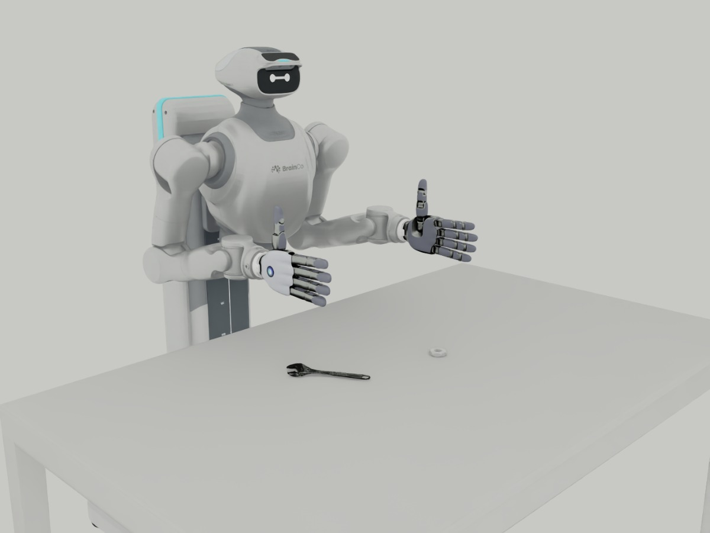
初态：扳手与六角螺母分开放在桌面，螺母平放。
区别：使用工具传递平面转矩，不是双手直接旋合螺纹。
怎么做
- 抓住扳手柄，用端部接触螺母外侧。
- 沿切向连续拨动，必要时换接触边，使螺母转过四分之一圈。
- 退出扳手并回位。
验收标准
- 螺母绕桌面法向转动 90°±10°，中心平移不超过 3 cm。
- 主要接触来自扳手端部外表面，手不直接拨动螺母。
- 工具退出后螺母静止 2 s。
开发前检查
- 该固定扳手开口尚未证明能套住当前螺母，因此只用端部切向拨转；不得伪造钳口配合。
资产、路径与单独预览
- 活动扳手 × 1
assets/library/prepared/obj.tabletop100.wrench/scene_v1/model.usdc原件：library/external/bench2dex/bf65215f844d/Objects/042_adjustable_wrench/textured.obj - 薄六角螺母 × 1
assets/library/prepared/obj.tabletop50.fastener_9/scene_v1/model.usdc原件：library/external/bench2dex/bf65215f844d/Objects/327_bolt_nuts/01_bolt_nuts/01/nuts_and_bolts_Object_9.glb
路径相对代码 checkout；原件路径相对资产根目录。恢复方式见 开发说明。
52 / 双工具协作 · 未开始 · 0 条轨迹
锅铲和勺子协作托住苹果
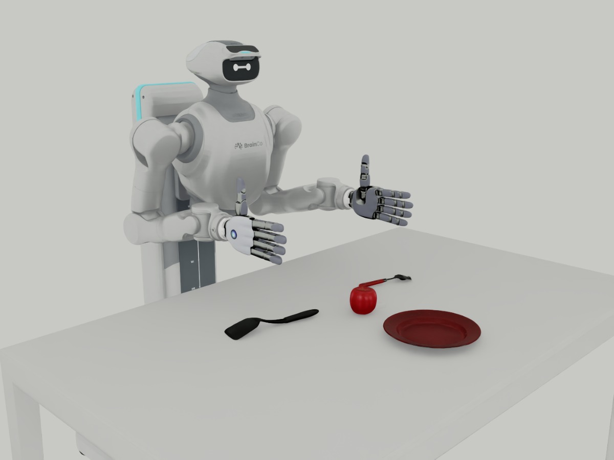
初态：苹果在中央，两种工具在两侧，空盘在后方。
区别：增加双工具相互配合和曲面物体防滚约束。
怎么做
- 一手握铲，另一手握勺。
- 铲面托起苹果，勺面从侧面阻止滚落。
- 把苹果放入盘中后依次撤出工具。
验收标准
- 苹果离桌至少 3 cm，转移至少 15 cm。
- 运输时由两件工具共同约束，手不接触苹果。
- 苹果留在盘内稳定 2 s，两工具均撤离。
开发前检查
- 使用实际网格核对抓取空间、支撑面与机器人可达性；转成动态资产后再测试。
资产、路径与单独预览
- 苹果 × 1
assets/library/prepared/obj.tabletop50.apple/scene_v1/model.usdc原件：library/external/bench2dex/bf65215f844d/Objects/013_apple/textured.obj - 锅铲 × 1
assets/library/prepared/obj.tabletop50.spatula/scene_v1/model.usdc原件：library/external/bench2dex/bf65215f844d/Objects/033_spatula/textured.obj - 金属勺 × 1
assets/library/prepared/obj.tabletop50.spoon/scene_v1/model.usdc原件：library/external/bench2dex/bf65215f844d/Objects/031_spoon/textured.obj - 餐盘 × 1
assets/library/prepared/obj.tabletop50.plate/scene_v1/model.usdc原件：library/external/bench2dex/bf65215f844d/Objects/029_plate/textured.obj
路径相对代码 checkout；原件路径相对资产根目录。恢复方式见 开发说明。
53 / 工具操作 · 未开始 · 0 条轨迹
用叉柄穿过杯把牵引杯子
初态：杯子直立，杯把朝侧面，叉子横放在前方。
区别：用杯把形成工具约束，区别于抓杯放杯或挂杯。
怎么做
- 将叉柄穿过杯把。
- 保持杯底接触桌面，用叉柄牵引杯子到旁侧目标。
- 退回叉柄并放下。
验收标准
- 杯子平移 12–18 cm，倾角始终小于 15°。
- 牵引阶段只允许叉柄内穿杯把接触，不能直接抓杯。
- 杯把无穿透，杯子释放后稳定 2 s。
开发前检查
- 先测量叉柄截面与杯把孔径，验证完整插入及退出路径。
资产、路径与单独预览
- 带柄马克杯 × 1
assets/library/prepared/obj.tabletop100.mug/scene_v1/model.usdc原件：library/external/bench2dex/bf65215f844d/Objects/025_mug/textured.obj - 餐叉 × 1
assets/library/prepared/obj.tabletop50.fork/scene_v1/model.usdc原件：library/external/bench2dex/bf65215f844d/Objects/030_fork/textured.obj
路径相对代码 checkout；原件路径相对资产根目录。恢复方式见 开发说明。
54 / 接触轨迹 · 未开始 · 0 条轨迹
持记号笔沿笔记本折线路径移动
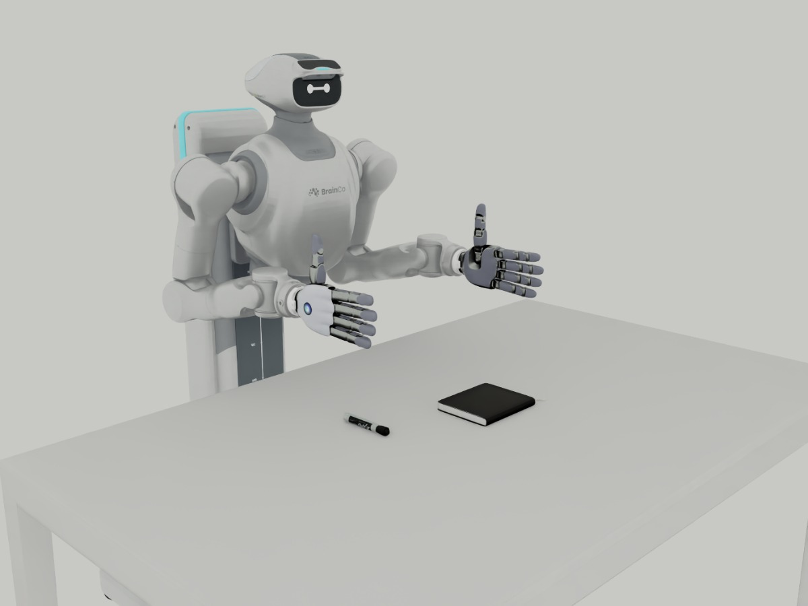
初态：笔记本平放，记号笔在右侧；路径由笔记本表面坐标定义，不添加实体标记。
区别：评估连续笔端接触轨迹，不生成笔迹，也不同于一次盖印。
怎么做
- 握笔并把笔端移到路径起点。
- 连续经过笔记本表面四个折线点。
- 抬笔，放回桌面。
验收标准
- 笔端按顺序经过四个目标点，每点误差小于 5 mm。
- 段内笔端到表面距离在 0–3 mm，不能穿透纸面。
- 折线转角处连续减速，笔记本位移不超过 2 cm。
开发前检查
- 资产为整体记号笔；先标定端部坐标，不假设笔盖可拆或存在墨水模型。
资产、路径与单独预览
- 笔记本 × 1
assets/library/prepared/obj.tabletop50.notebook/scene_v1/model.usdc原件：library/external/bench2dex/bf65215f844d/Objects/196_notebook/base2.glb - 粗记号笔 × 1
assets/library/prepared/obj.tabletop100.marker/scene_v1/model.usdc原件：library/external/bench2dex/bf65215f844d/Objects/040_large_marker/textured.obj
路径相对代码 checkout；原件路径相对资产根目录。恢复方式见 开发说明。
55 / 接触轨迹 · 未开始 · 0 条轨迹
双手用擀面杖沿海绵往返滚动
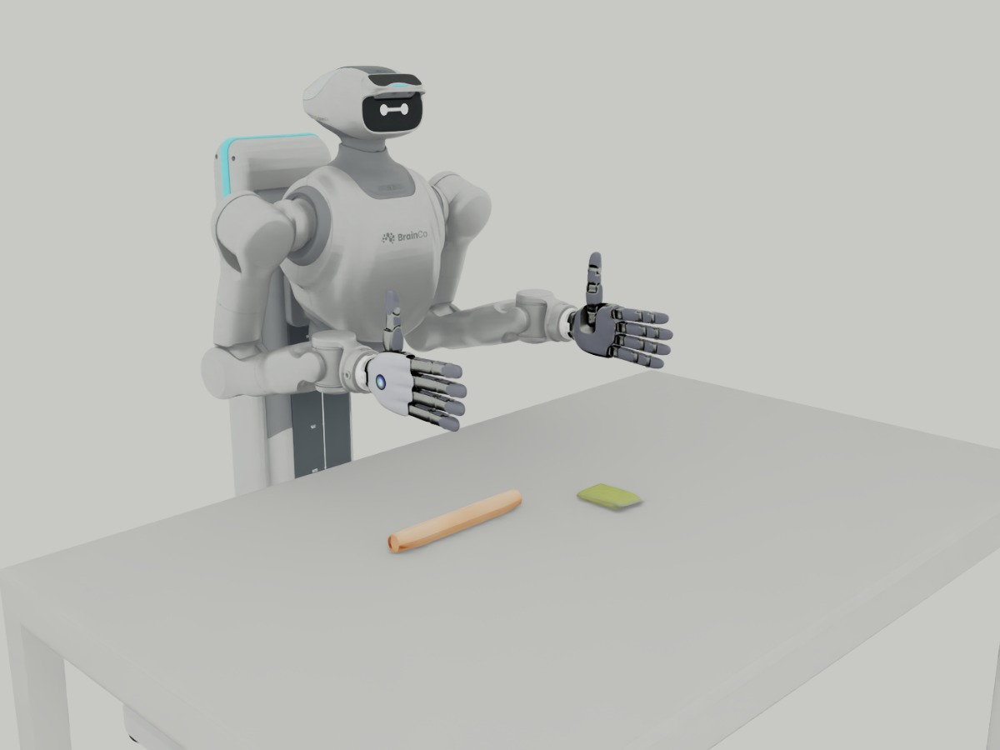
初态：海绵平放，擀面杖在右前方。
区别：考察滚动接触和工具朝向，不把刚体海绵当成可压缩材料。
怎么做
- 双手扶住擀面杖两端，将圆柱曲面贴到海绵一端。
- 保持曲面接触，让擀面杖整体转动，完成一次前进和返回。
- 抬起工具并放下。
验收标准
- 接触覆盖海绵长度至少 80%，往返各一次，擀面杖绕自身长轴转动。
- 接触使用擀面杖曲面，海绵平移不超过 2 cm。
- 曲面不穿透海绵；不能只平移而不转动。
开发前检查
- 源模型为整根刚体擀面杖，滚动由整体姿态变化实现；不假设独立轮轴。
资产、路径与单独预览
- 海绵 × 1
assets/library/prepared/obj.tabletop50.sponge/scene_v1/model.usdc原件：library/external/bench2dex/bf65215f844d/Objects/026_sponge/textured.obj - 擀面杖 × 1
assets/library/prepared/obj.tabletop100.roller/scene_v1/model.usdc原件：library/external/bench2dex/bf65215f844d/Objects/205_roller/base2.glb
路径相对代码 checkout；原件路径相对资产根目录。恢复方式见 开发说明。
56 / 接触轨迹 · 未开始 · 0 条轨迹
勺子沿碗内壁绕一圈
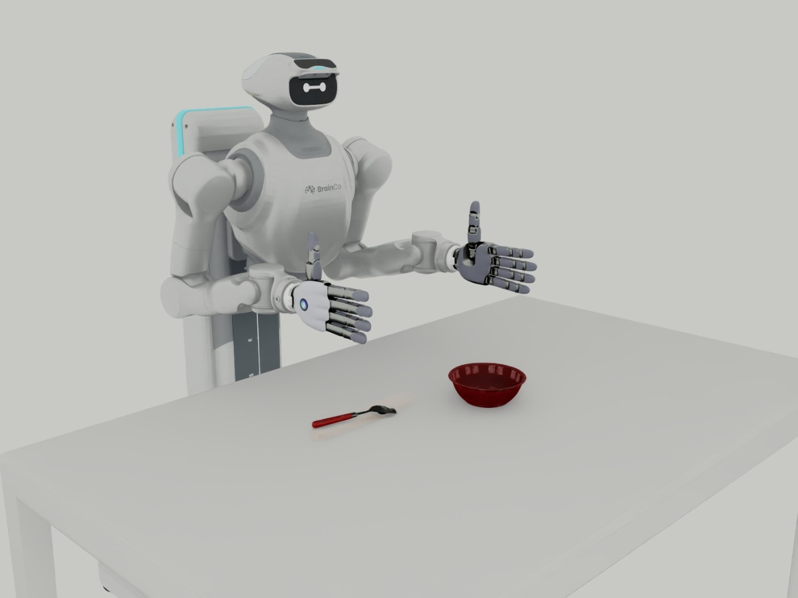
初态：空碗在中央，勺子在右侧。
区别：沿凹面保持接触，不是从碗内舀取物体。
怎么做
- 一手扶住碗外壁，另一手握勺。
- 勺面沿碗内壁连续绕行一周。
- 退出勺子并松开碗。
验收标准
- 接触点绕碗轴累计至少 330°。
- 勺面与碗内壁保持非穿透接触，不能从碗外绕过。
- 碗位移不超过 2 cm，勺子顺利退出。
开发前检查
- 使用实际网格核对抓取空间、支撑面与机器人可达性；转成动态资产后再测试。
资产、路径与单独预览
- 碗 × 1
assets/library/prepared/obj.tabletop50.bowl/scene_v1/model.usdc原件：library/external/bench2dex/bf65215f844d/Objects/024_bowl/textured.obj - 金属勺 × 1
assets/library/prepared/obj.tabletop50.spoon/scene_v1/model.usdc原件：library/external/bench2dex/bf65215f844d/Objects/031_spoon/textured.obj
路径相对代码 checkout；原件路径相对资产根目录。恢复方式见 开发说明。
57 / 双手清洁 · 未开始 · 0 条轨迹
翻起鞋子后刷扫鞋底
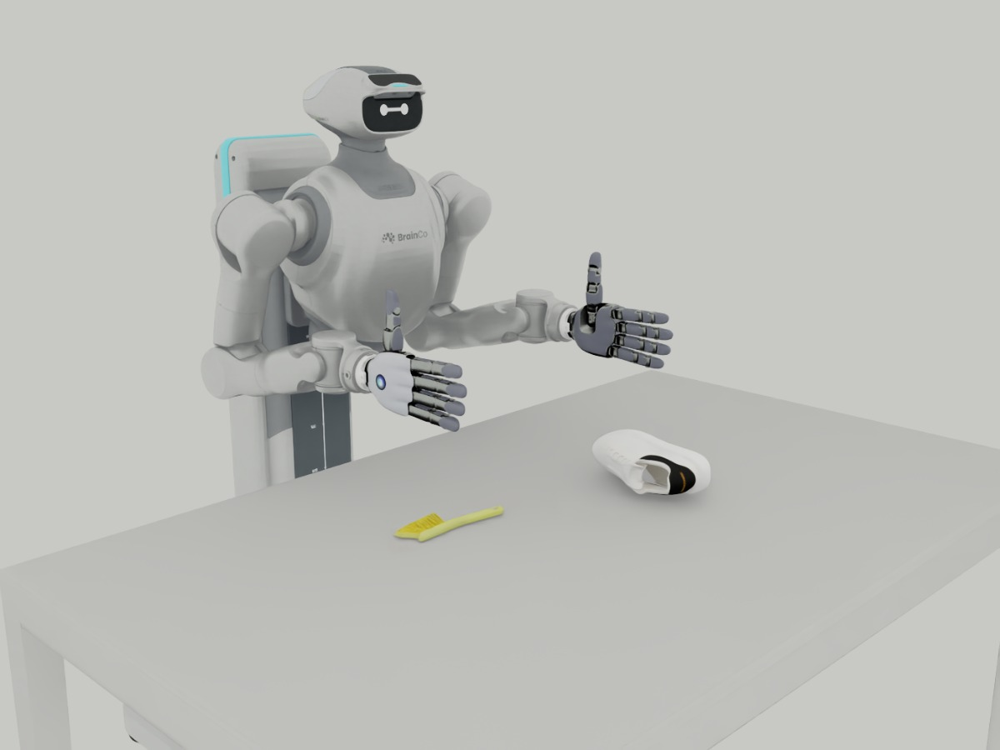
初态：鞋子侧放，刷子在右侧。
区别：被清洁物体也在手中，需要双手持续相对定位。
怎么做
- 一手抓住鞋面，把鞋底转向刷子。
- 另一手沿鞋底纵向刷三次。
- 将鞋放正，再放下刷子。
验收标准
- 刷毛接触覆盖鞋底长度至少 70%。
- 三次刷扫期间鞋子由另一手持续支撑。
- 鞋底最终朝桌面，鞋与工具均稳定 2 s。
开发前检查
- 使用实际网格核对抓取空间、支撑面与机器人可达性；转成动态资产后再测试。
资产、路径与单独预览
- 鞋 × 1
assets/library/prepared/obj.tabletop50.shoe/scene_v1/model.usdc原件：library/external/bench2dex/bf65215f844d/Objects/153_shoe/base9.glb - 刷子 × 1
assets/library/prepared/obj.tabletop50.brush/scene_v1/model.usdc原件：library/external/bench2dex/bf65215f844d/Objects/189_brush/base3.glb
路径相对代码 checkout；原件路径相对资产根目录。恢复方式见 开发说明。
58 / 双手清洁 · 未开始 · 0 条轨迹
持盘擦拭正反两面
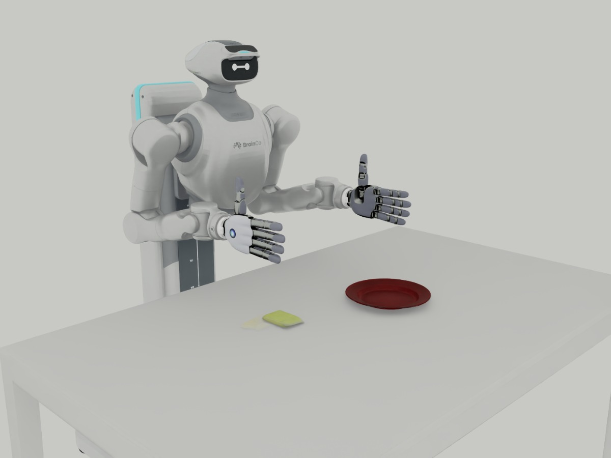
初态：餐盘平放，海绵在右侧。
区别：增加持物翻面与双面接触，区别于扶直瓶子擦外壁。
怎么做
- 一手抓住盘沿，另一手持海绵擦盘内面。
- 重新调整盘子握持，翻转后擦外底面。
- 将盘子放正，放回海绵。
验收标准
- 内面和外底面分别覆盖预先定义的三个接触区。
- 翻面时盘子全程有真实手部支撑。
- 盘子不撞桌，最终正放并稳定 2 s。
开发前检查
- 使用实际网格核对抓取空间、支撑面与机器人可达性；转成动态资产后再测试。
资产、路径与单独预览
- 餐盘 × 1
assets/library/prepared/obj.tabletop50.plate/scene_v1/model.usdc原件：library/external/bench2dex/bf65215f844d/Objects/029_plate/textured.obj - 海绵 × 1
assets/library/prepared/obj.tabletop50.sponge/scene_v1/model.usdc原件：library/external/bench2dex/bf65215f844d/Objects/026_sponge/textured.obj
路径相对代码 checkout；原件路径相对资产根目录。恢复方式见 开发说明。
59 / 工具操作 · 未开始 · 0 条轨迹
用餐刀辅助捏起薄罐头
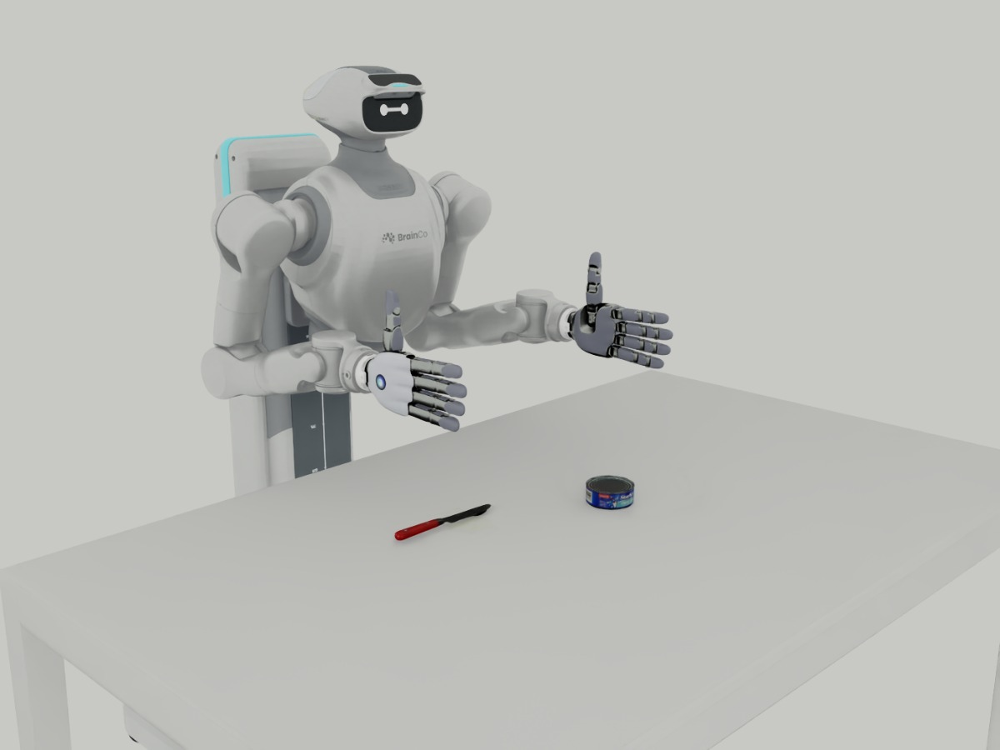
初态：薄金枪鱼罐平放，餐刀在旁。
区别：工具创造手指抓取间隙，并完成工具到手的支撑交接。
怎么做
- 将餐刀薄边伸到罐体底缘，轻抬一侧。
- 另一只手利用新增间隙捏住罐沿。
- 撤刀后把罐头放到旁侧。
验收标准
- 先由工具抬起罐体一侧至少 8 mm，再由手接管。
- 手接管前刀具不能穿透罐底；不能切割罐体。
- 罐头移开至少 12 cm，放稳 2 s。
开发前检查
- 使用实际网格核对抓取空间、支撑面与机器人可达性；转成动态资产后再测试。
资产、路径与单独预览
- 金枪鱼罐 × 1
assets/library/prepared/obj.tabletop50.tuna/scene_v1/model.usdc原件：library/external/bench2dex/bf65215f844d/Objects/007_tuna_fish_can/textured.obj - 餐刀 × 1
assets/library/prepared/obj.tabletop100.knife/scene_v1/model.usdc原件：library/external/bench2dex/bf65215f844d/Objects/032_knife/textured.obj
路径相对代码 checkout；原件路径相对资产根目录。恢复方式见 开发说明。
60 / 接触轨迹 · 未开始 · 0 条轨迹
用螺丝刀柄端依次触碰计算器按键
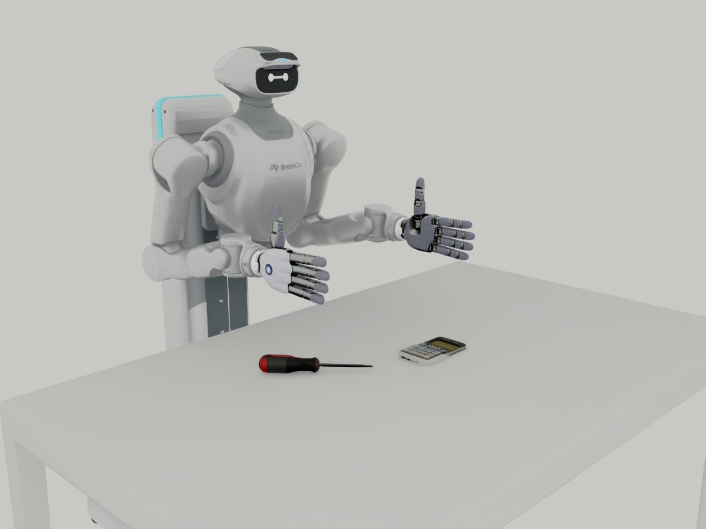
初态：计算器朝上，螺丝刀在右侧；选定三个不同按键表面。
区别：考察工具端点定位及接触顺序，不宣称静态网格有按键电路。
怎么做
- 握住螺丝刀杆，让钝柄端朝下。
- 按顺序轻触三个按键表面，每次离开后再到下一键。
- 放回工具。
验收标准
- 柄端按序进入三个按键中心半径 4 mm 范围。
- 每次触碰持续 0.1–0.5 s，间隔有可观测离面。
- 计算器位移小于 1 cm；不要求数字显示或电子功能变化。
开发前检查
- 标定柄端及三个按键表面；后续若要求按键行程需另接真实关节。
资产、路径与单独预览
- 计算器 × 1
assets/library/prepared/obj.tabletop50.calculator/scene_v1/model.usdc原件：library/external/bench2dex/bf65215f844d/Objects/135_calculator/base5.glb - 一字螺丝刀 × 1
assets/library/prepared/obj.tabletop50.driver/scene_v1/model.usdc原件：library/external/bench2dex/bf65215f844d/Objects/044_flat_screwdriver/textured.obj
路径相对代码 checkout；原件路径相对资产根目录。恢复方式见 开发说明。
61 / 非抓取操作 · 未开始 · 0 条轨迹
倾斜餐盘让橙子滚入碗
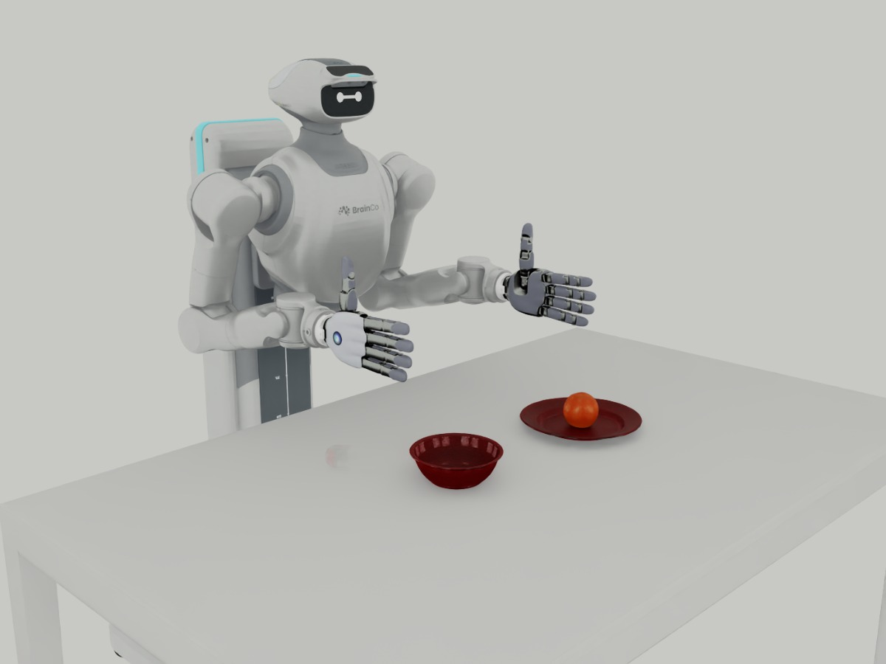
初态：橙子在盘中央，空碗在旁侧。
区别：开放盘面的倾角控制与球形物滚动，区别于罐中倒料。
怎么做
- 双手拿稳盘子并把低侧盘沿靠近碗口。
- 逐渐倾盘，使橙子滚入碗。
- 把空盘放回。
验收标准
- 橙子通过重力及盘面接触进入碗，手不直接接触橙子。
- 滚落高度小于 5 cm，盘子不击打碗沿。
- 橙子留在碗内稳定 2 s。
开发前检查
- 使用实际网格核对抓取空间、支撑面与机器人可达性；转成动态资产后再测试。
资产、路径与单独预览
- 餐盘 × 1
assets/library/prepared/obj.tabletop50.plate/scene_v1/model.usdc原件：library/external/bench2dex/bf65215f844d/Objects/029_plate/textured.obj - 橙子 × 1
assets/library/prepared/obj.tabletop100.orange/scene_v1/model.usdc原件：library/external/bench2dex/bf65215f844d/Objects/017_orange/textured.obj - 碗 × 1
assets/library/prepared/obj.tabletop50.bowl/scene_v1/model.usdc原件：library/external/bench2dex/bf65215f844d/Objects/024_bowl/textured.obj
路径相对代码 checkout；原件路径相对资产根目录。恢复方式见 开发说明。
62 / 平衡搬运 · 未开始 · 0 条轨迹
端着杯与罐头绕过高瓶
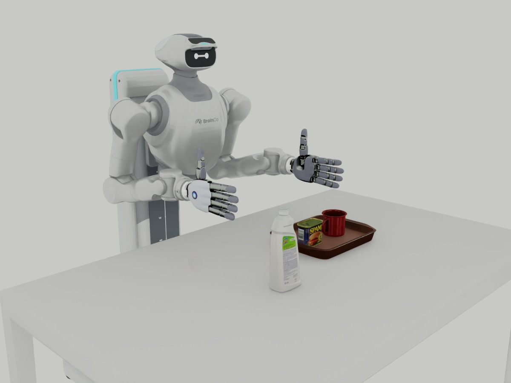
初态：杯与罐头分放托盘两端，清洁剂瓶在运输路径旁。
区别：非对称真实载荷加绕障，不只是空托盘搬运。
怎么做
- 双手端起托盘。
- 绕过高瓶移动到桌面另一侧。
- 平稳放下，松手。
验收标准
- 托盘移动至少 25 cm，与瓶子保持至少 2 cm 几何间隙。
- 杯和罐头始终受托盘支撑，相对滑移各不超过 2 cm。
- 高瓶位移小于 1 cm，载荷不倾倒。
开发前检查
- 使用实际网格核对抓取空间、支撑面与机器人可达性；转成动态资产后再测试。
资产、路径与单独预览
- 长方托盘 × 1
assets/library/prepared/obj.tabletop100.tray/scene_v1/model.usdc原件：library/external/bench2dex/bf65215f844d/Objects/130_tray/base3.glb - 带柄马克杯 × 1
assets/library/prepared/obj.tabletop100.mug/scene_v1/model.usdc原件：library/external/bench2dex/bf65215f844d/Objects/025_mug/textured.obj - 午餐肉罐 × 1
assets/library/prepared/obj.tabletop100.meatcan/scene_v1/model.usdc原件：library/external/bench2dex/bf65215f844d/Objects/010_potted_meat_can/textured.obj - 清洁剂瓶 × 1
assets/library/prepared/obj.tabletop100.cleanser/scene_v1/model.usdc原件：library/external/bench2dex/bf65215f844d/Objects/021_bleach_cleanser/textured.obj
路径相对代码 checkout；原件路径相对资产根目录。恢复方式见 开发说明。
63 / 平衡搬运 · 未开始 · 0 条轨迹
端盘移动时让球留在中央
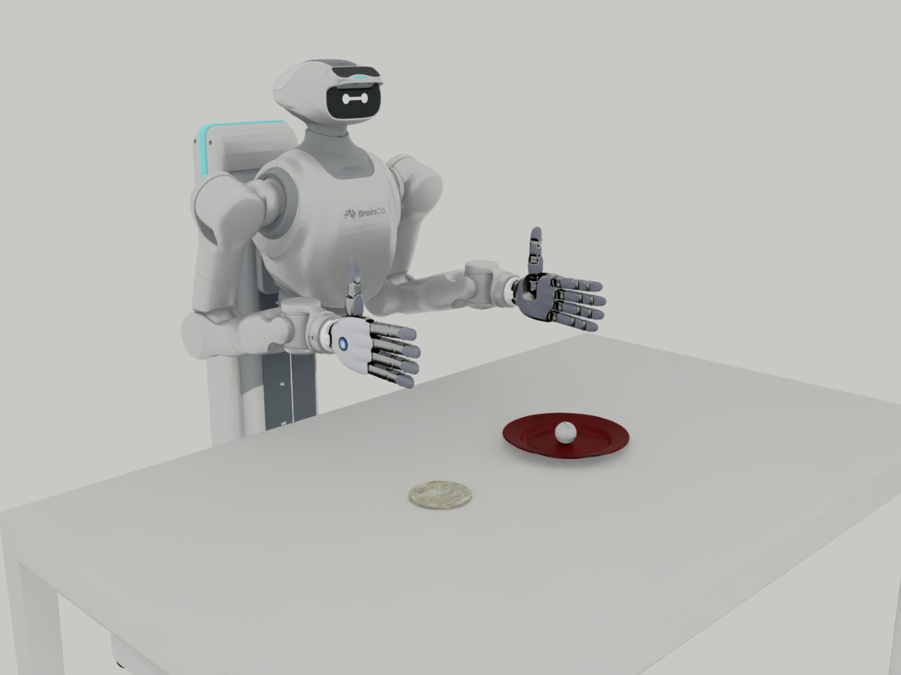
初态：高尔夫球在盘中央，杯垫标示目标区域旁边。
区别：控制自由滚动物相对位置，比勺托草莓更强调姿态反馈。
怎么做
- 双手抬盘。
- 把盘平移到杯垫旁并停稳。
- 放下盘子，保持球不滚出。
验收标准
- 盘子离桌至少 4 cm、平移至少 20 cm。
- 球与盘中心距离不超过盘有效半径的 50%。
- 手不能按住球，放下后球稳定 2 s。
开发前检查
- 使用实际网格核对抓取空间、支撑面与机器人可达性；转成动态资产后再测试。
资产、路径与单独预览
- 餐盘 × 1
assets/library/prepared/obj.tabletop50.plate/scene_v1/model.usdc原件：library/external/bench2dex/bf65215f844d/Objects/029_plate/textured.obj - 高尔夫球 × 1
assets/library/prepared/obj.tabletop50.golf/scene_v1/model.usdc原件：library/external/bench2dex/bf65215f844d/Objects/058_golf_ball/textured.obj - 杯垫 × 1
assets/library/prepared/obj.tabletop50.coaster/scene_v1/model.usdc原件：library/external/bench2dex/bf65215f844d/Objects/137_coaster/base0.glb
路径相对代码 checkout；原件路径相对资产根目录。恢复方式见 开发说明。
64 / 受限空间 · 未开始 · 0 条轨迹
转动量壶通过两盒之间
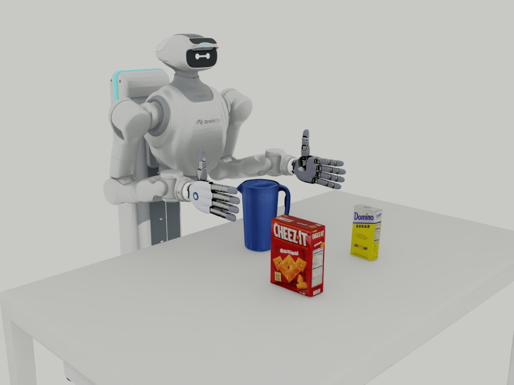
初态：量壶在前方，两只高包装盒形成通道；壶把初始横向。
区别：不对称带柄容器的全物体避障，不是长法棍的轴向穿越。
怎么做
- 握住壶把与壶身，抬起。
- 把量壶转到窄侧朝向通道，低位通过。
- 通道后方放下并恢复壶嘴朝向。
验收标准
- 完整壶体含把手从两盒之间通过，最低点离桌不高于 8 cm。
- 途中与盒子无接触，盒子位移小于 1 cm。
- 量壶最终直立，壶嘴朝向误差小于 10°。
开发前检查
- 根据完整壶体凸包核对通道窄向可通过、宽向需转动；不可只检查壶身。
资产、路径与单独预览
- 带柄量壶 × 1
assets/library/prepared/obj.tabletop100.pitcher/scene_v1/model.usdc原件：library/external/bench2dex/bf65215f844d/Objects/019_pitcher_base/textured.obj - 糖盒 × 1
assets/library/prepared/obj.tabletop100.sugar/scene_v1/model.usdc原件：library/external/bench2dex/bf65215f844d/Objects/004_sugar_box/textured.obj - 饼干盒 × 1
assets/library/prepared/obj.tabletop50.cracker/scene_v1/model.usdc原件：library/external/bench2dex/bf65215f844d/Objects/003_cracker_box/textured.obj
路径相对代码 checkout；原件路径相对资产根目录。恢复方式见 开发说明。
65 / 搭建与引导 · 未开始 · 0 条轨迹
搭出书本斜坡让球滚入托盘
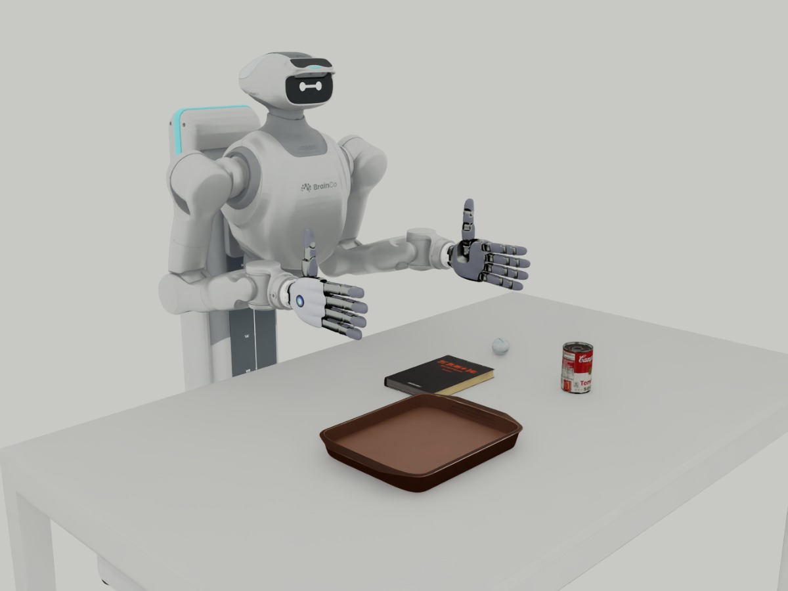
初态：书、罐头、托盘和球分开放置。
区别：先建立几何关系再利用重力输送；区别于直接滚球交接。
怎么做
- 用罐头支撑书本一端，另一端接近托盘。
- 把球放在坡顶后松手。
- 等待球滚入托盘。
验收标准
- 书本形成 10°–35°斜坡，两个支撑接触真实。
- 球释放后靠重力滚过书面并进入托盘，手不再推球。
- 搭建物不塌落，球留在托盘内 2 s。
开发前检查
- 使用实际网格核对抓取空间、支撑面与机器人可达性；转成动态资产后再测试。
资产、路径与单独预览
- 书 × 1
assets/library/prepared/obj.tabletop50.book/scene_v1/model.usdc原件：library/external/bench2dex/bf65215f844d/Objects/155_book/base1.glb - 汤罐 × 1
assets/library/prepared/obj.tabletop100.soupcan/scene_v1/model.usdc原件：library/external/bench2dex/bf65215f844d/Objects/005_tomato_soup_can/textured.obj - 长方托盘 × 1
assets/library/prepared/obj.tabletop100.tray/scene_v1/model.usdc原件：library/external/bench2dex/bf65215f844d/Objects/130_tray/base3.glb - 高尔夫球 × 1
assets/library/prepared/obj.tabletop50.golf/scene_v1/model.usdc原件：library/external/bench2dex/bf65215f844d/Objects/058_golf_ball/textured.obj
路径相对代码 checkout；原件路径相对资产根目录。恢复方式见 开发说明。
66 / 搭建与引导 · 未开始 · 0 条轨迹
用书和罐头搭桥让小车穿过
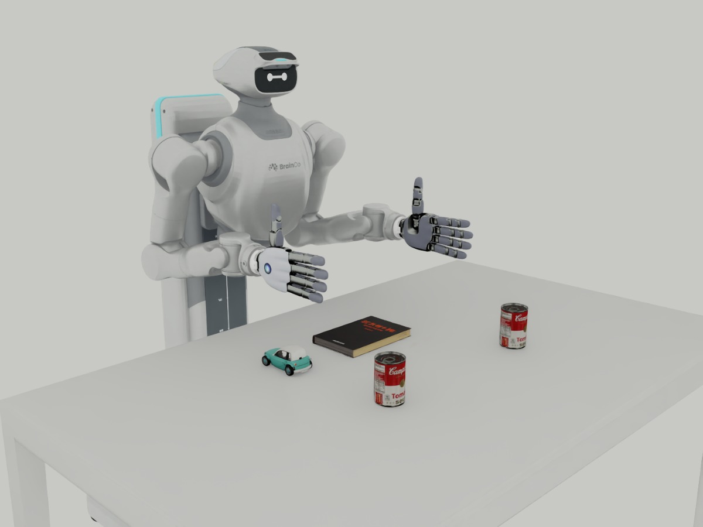
初态：书本、两只汤罐和小车分开放置。
区别：搭建必须满足另一物体的通行需求，不只是横放毛笔。
怎么做
- 把两罐间隔摆好，用书本横搭桥面。
- 扶住桥面，另一手让小车从桥下经过。
- 撤手检查桥是否稳定。
验收标准
- 桥下净空大于小车外形，书本同时支撑在两罐上。
- 小车完整从桥下穿过，未推倒支撑罐。
- 撤手后桥保持 2 s。
开发前检查
- 使用实际网格核对抓取空间、支撑面与机器人可达性；转成动态资产后再测试。
资产、路径与单独预览
- 书 × 1
assets/library/prepared/obj.tabletop50.book/scene_v1/model.usdc原件：library/external/bench2dex/bf65215f844d/Objects/155_book/base1.glb - 汤罐 × 2
assets/library/prepared/obj.tabletop100.soupcan/scene_v1/model.usdc原件：library/external/bench2dex/bf65215f844d/Objects/005_tomato_soup_can/textured.obj - 玩具车 × 1
assets/library/prepared/obj.tabletop50.toycar/scene_v1/model.usdc原件：library/external/bench2dex/bf65215f844d/Objects/165_toycar/base5.glb
路径相对代码 checkout；原件路径相对资产根目录。恢复方式见 开发说明。
67 / 双手协作 · 未开始 · 0 条轨迹
抬杯后把杯垫送到杯底
初态：杯子直立在桌上，杯垫在右前方。
区别：在持杯期间插入支撑物，时序与抽走杯垫相反。
怎么做
- 一手握杯把，只把杯子抬起少量。
- 另一手把杯垫平移到杯底正下方。
- 把杯子落到杯垫并依次松手。
验收标准
- 杯子抬起高度为 2–6 cm，杯垫不撞杯底。
- 杯底投影完全落在杯垫有效支撑范围内。
- 双手释放后杯子直立稳定 2 s。
开发前检查
- 使用实际网格核对抓取空间、支撑面与机器人可达性；转成动态资产后再测试。
资产、路径与单独预览
- 带柄马克杯 × 1
assets/library/prepared/obj.tabletop100.mug/scene_v1/model.usdc原件：library/external/bench2dex/bf65215f844d/Objects/025_mug/textured.obj - 杯垫 × 1
assets/library/prepared/obj.tabletop50.coaster/scene_v1/model.usdc原件：library/external/bench2dex/bf65215f844d/Objects/137_coaster/base0.glb
路径相对代码 checkout；原件路径相对资产根目录。恢复方式见 开发说明。
68 / 双手协作 · 未开始 · 0 条轨迹
用盘盖住碗后夹持翻转
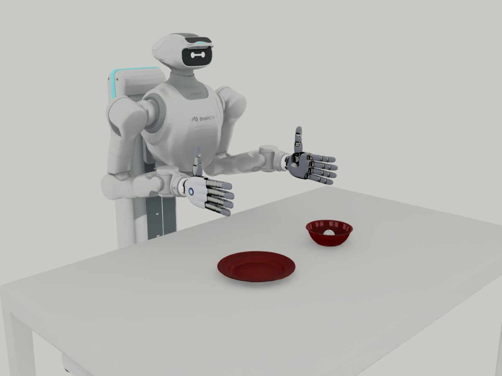
初态：球在碗内，餐盘在旁侧。
区别：两容器协同封闭和整体翻面，不是单独倒扣杯子。
怎么做
- 用餐盘覆盖碗口。
- 双手夹持盘碗组合，连续翻转 180°。
- 盘朝下放到桌面，拿走倒扣的碗。
验收标准
- 翻转期间球一直被盘碗围住，没有逃逸。
- 盘和碗始终有真实接触与手部夹持，不能绑定成一体。
- 移走碗后球留在盘内并稳定 2 s。
开发前检查
- 核对盘径覆盖整个碗口，碰撞网格必须保留真实内腔。
资产、路径与单独预览
- 碗 × 1
assets/library/prepared/obj.tabletop50.bowl/scene_v1/model.usdc原件：library/external/bench2dex/bf65215f844d/Objects/024_bowl/textured.obj - 高尔夫球 × 1
assets/library/prepared/obj.tabletop50.golf/scene_v1/model.usdc原件：library/external/bench2dex/bf65215f844d/Objects/058_golf_ball/textured.obj - 餐盘 × 1
assets/library/prepared/obj.tabletop50.plate/scene_v1/model.usdc原件：library/external/bench2dex/bf65215f844d/Objects/029_plate/textured.obj
路径相对代码 checkout；原件路径相对资产根目录。恢复方式见 开发说明。
69 / 双手协作 · 未开始 · 0 条轨迹
用两只盘子夹住面包搬运
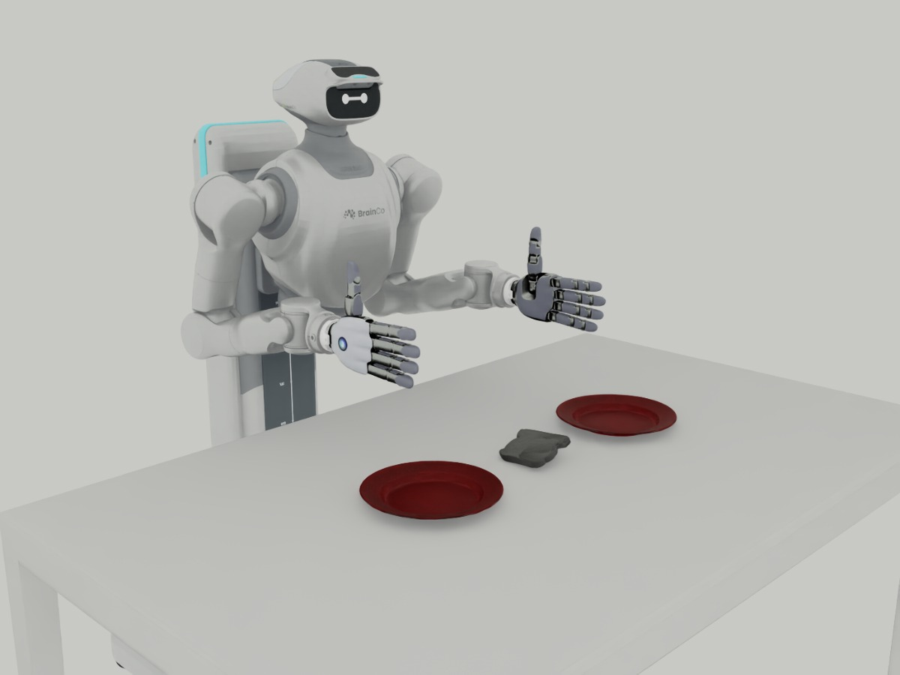
初态：面包在中央，两只盘子分别放在两侧。
区别：以两块现有餐具构成夹具，区别于叉铲翻面。
怎么做
- 用两盘的平面从两侧夹住面包。
- 保持夹持将面包抬起并移动。
- 把面包放回桌面后分开盘子。
验收标准
- 面包离桌至少 3 cm、平移至少 15 cm。
- 手不直接触碰面包，支撑来自两盘的真实摩擦接触。
- 面包无穿透，释放后两盘分离至少 5 cm。
开发前检查
- 使用实际网格核对抓取空间、支撑面与机器人可达性；转成动态资产后再测试。
资产、路径与单独预览
- 餐盘 × 2
assets/library/prepared/obj.tabletop50.plate/scene_v1/model.usdc原件：library/external/bench2dex/bf65215f844d/Objects/029_plate/textured.obj - 面包片 × 1
assets/library/prepared/obj.tabletop50.bread/scene_v1/model.usdc原件：library/external/bench2dex/bf65215f844d/Objects/222_bread_slice/uploads_files_2384335_pan.obj
路径相对代码 checkout；原件路径相对资产根目录。恢复方式见 开发说明。
70 / 平衡放置 · 未开始 · 0 条轨迹
把勺子横搭在杯口
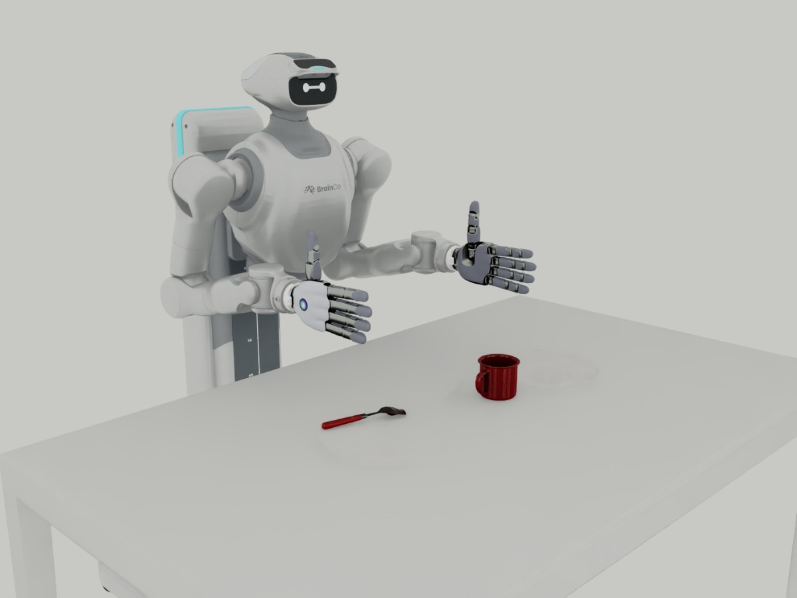
初态：空杯直立，勺子平放在右侧。
区别：将不对称餐具平衡在曲面窄支撑上，区别于毛笔搭两盒。
怎么做
- 抓起勺柄，调整勺子重心。
- 把勺子横放杯口，形成两侧接触。
- 缓慢释放并撤手。
验收标准
- 勺子跨过杯口且接触杯沿至少两处。
- 勺子未掉入杯中，杯子未倾倒。
- 双手离开 3 cm 后保持 3 s。
开发前检查
- 使用实际网格核对抓取空间、支撑面与机器人可达性；转成动态资产后再测试。
资产、路径与单独预览
- 带柄马克杯 × 1
assets/library/prepared/obj.tabletop100.mug/scene_v1/model.usdc原件：library/external/bench2dex/bf65215f844d/Objects/025_mug/textured.obj - 金属勺 × 1
assets/library/prepared/obj.tabletop50.spoon/scene_v1/model.usdc原件：library/external/bench2dex/bf65215f844d/Objects/031_spoon/textured.obj
路径相对代码 checkout；原件路径相对资产根目录。恢复方式见 开发说明。
71 / 定量释放 · 未开始 · 0 条轨迹
从杯中逐个倒出三颗骰子
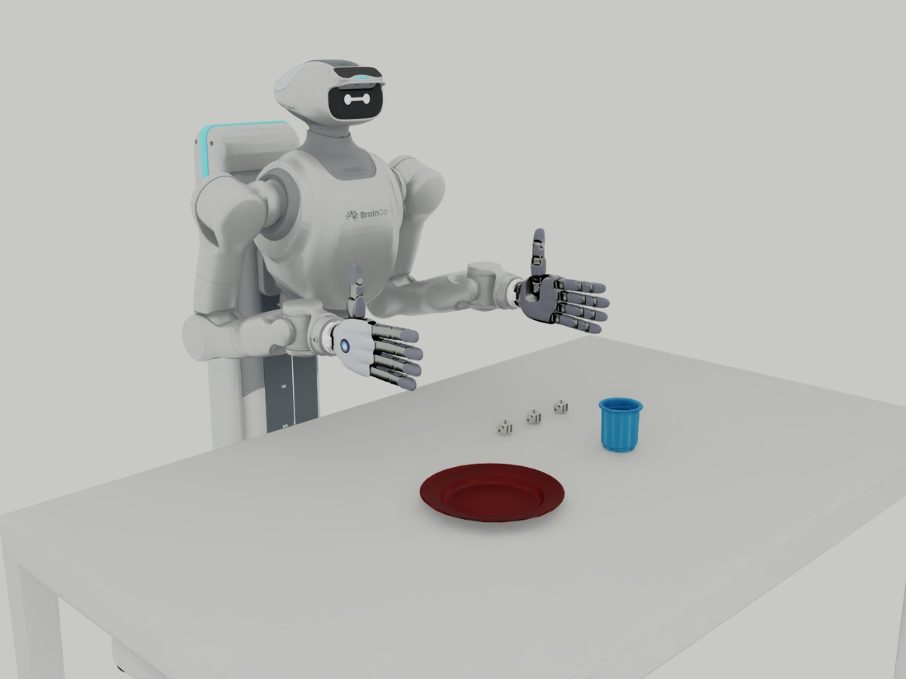
初态：三颗骰子在杯前分开放置，空盘在右侧。
区别：验收离散释放次数和节奏，不是一次倒空。
怎么做
- 先把三颗骰子放入杯中，再拿起杯子把杯口移到盘上方。
- 控制倾角，一次只释放一颗，间隔停留。
- 三颗倒完后把空杯放正。
验收标准
- 三次出杯事件各只有一颗骰子，事件间隔至少 0.3 s。
- 三颗都留在盘内，无手指伸进杯中取物。
- 杯子最终直立，骰子静止 2 s。
开发前检查
- 检查三颗骰子的初始不穿插，以及杯口允许分次释放；该有意义停顿不视为无意义停顿。
资产、路径与单独预览
- 套杯 B × 1
assets/library/prepared/obj.tabletop50.cup_b/scene_v1/model.usdc原件：library/external/bench2dex/bf65215f844d/Objects/065-b_cups/google_16k/textured.obj - 骰子 × 3
assets/library/prepared/obj.tabletop50.dice/scene_v1/model.usdc原件：library/external/bench2dex/bf65215f844d/Objects/062_dice/textured.obj - 餐盘 × 1
assets/library/prepared/obj.tabletop50.plate/scene_v1/model.usdc原件：library/external/bench2dex/bf65215f844d/Objects/029_plate/textured.obj
路径相对代码 checkout；原件路径相对资产根目录。恢复方式见 开发说明。
72 / 双手协作 · 未开始 · 0 条轨迹
双手在两只杯间转移球
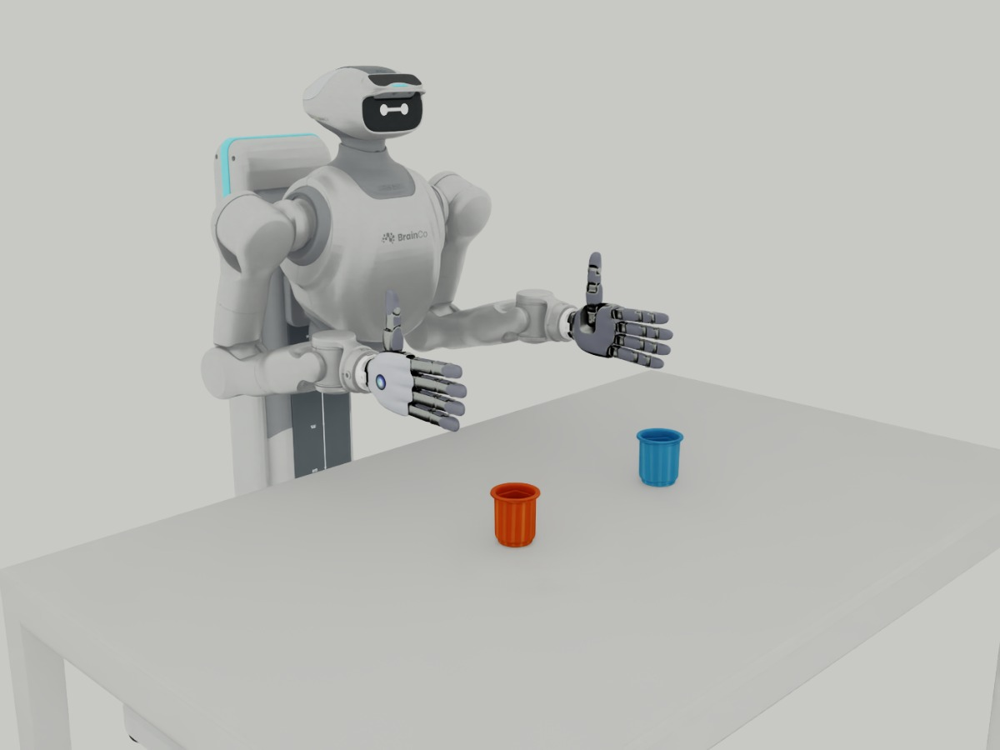
初态：球在左杯，右杯为空。
区别：两个运动容器相对对准与接收，不是固定碗接料。
怎么做
- 双手分别拿起一只杯。
- 对齐杯口并倾斜左杯，把球转入右杯。
- 分开杯子并放回。
验收标准
- 球从左杯进入右杯，全程不接触手和桌面。
- 接收时两杯口最短距离小于 3 cm，不能用杯体穿透传球。
- 两杯放稳，球留在右杯 2 s。
开发前检查
- 使用实际网格核对抓取空间、支撑面与机器人可达性；转成动态资产后再测试。
资产、路径与单独预览
- 套杯 B × 1
assets/library/prepared/obj.tabletop50.cup_b/scene_v1/model.usdc原件：library/external/bench2dex/bf65215f844d/Objects/065-b_cups/google_16k/textured.obj - 高尔夫球 × 1
assets/library/prepared/obj.tabletop50.golf/scene_v1/model.usdc原件：library/external/bench2dex/bf65215f844d/Objects/058_golf_ball/textured.obj - 套杯 A × 1
assets/library/prepared/obj.tabletop50.cup_a/scene_v1/model.usdc原件：library/external/bench2dex/bf65215f844d/Objects/065-a_cups/google_16k/textured.obj
路径相对代码 checkout；原件路径相对资产根目录。恢复方式见 开发说明。
73 / 插装与对准 · 未开始 · 0 条轨迹
把毛笔穿过杯把
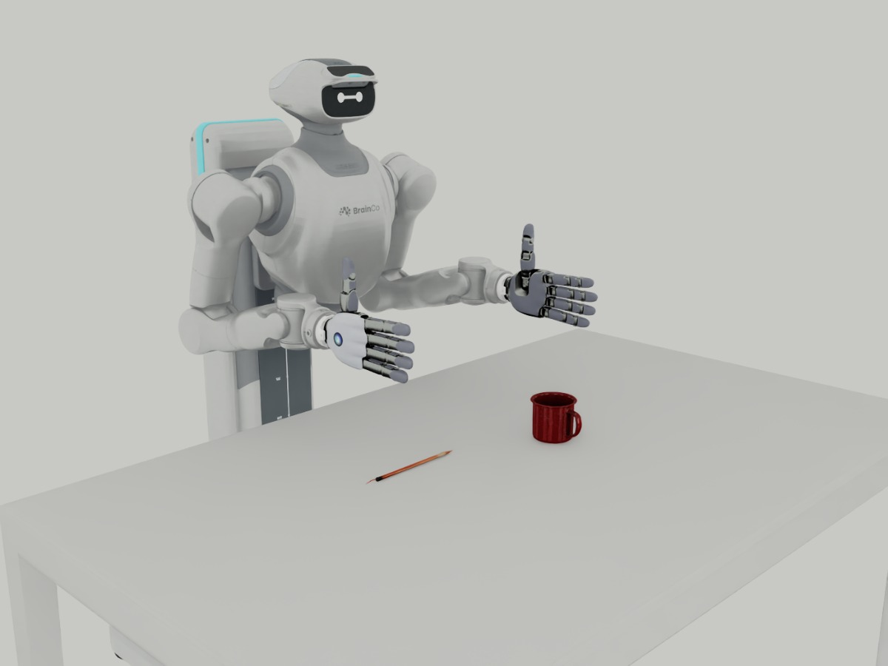
初态：杯把向侧面，细毛笔平放在右前方。
区别：侧向环孔插入和退出，不是向竖直笔筒落笔。
怎么做
- 一手稳住杯身，另一手抓笔。
- 将细毛笔沿杯把孔轴穿过。
- 再沿原方向抽出并放下。
验收标准
- 笔穿过杯把孔并在另一侧露出至少 2 cm。
- 穿入和抽出均沿真实孔道，无穿透杯把。
- 杯子中心位移小于 2 cm。
开发前检查
- 核对笔径与杯把最小孔径；仅使用现有尺寸，不为配合拉伸物体。
资产、路径与单独预览
- 带柄马克杯 × 1
assets/library/prepared/obj.tabletop100.mug/scene_v1/model.usdc原件：library/external/bench2dex/bf65215f844d/Objects/025_mug/textured.obj - 毛笔 × 1
assets/library/prepared/obj.tabletop50.brushpen/scene_v1/model.usdc原件：library/external/bench2dex/bf65215f844d/Objects/197_brush-pen/base5.glb
路径相对代码 checkout；原件路径相对资产根目录。恢复方式见 开发说明。
74 / 顺序操作 · 未开始 · 0 条轨迹
逐件把水果放到秤面再取下
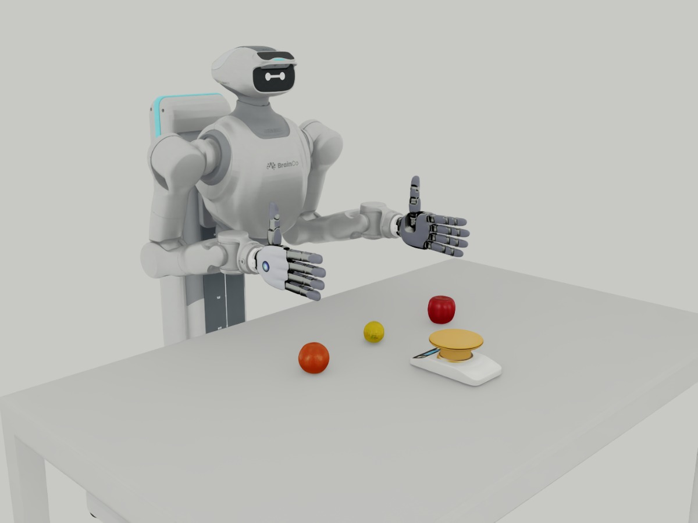
初态：电子秤在后方，三种水果在前方分开放置。
区别：单件占用约束与循环取放，使用真实秤面而不模拟未接入的称重电路。
怎么做
- 按苹果、柠檬、橙子的顺序逐个放到秤面中央。
- 每次停稳后取下，再放下一件。
- 把三件放回各自初始区域。
验收标准
- 秤面同时最多只有一件水果，每件独立停稳至少 1 s。
- 果体完全由秤面支撑，不能仍握在手里假称放置完成。
- 顺序正确，秤不移动超过 1 cm；不要求电子读数。
开发前检查
- 标定秤台有效支撑区域；禁止把纹理数字当作测量质量。
资产、路径与单独预览
- 电子秤 × 1
assets/library/prepared/obj.tabletop100.scale/scene_v1/model.usdc原件：library/external/bench2dex/bf65215f844d/Objects/179_electronicscale/base6.glb - 苹果 × 1
assets/library/prepared/obj.tabletop50.apple/scene_v1/model.usdc原件：library/external/bench2dex/bf65215f844d/Objects/013_apple/textured.obj - 柠檬 × 1
assets/library/prepared/obj.tabletop100.lemon/scene_v1/model.usdc原件：library/external/bench2dex/bf65215f844d/Objects/014_lemon/textured.obj - 橙子 × 1
assets/library/prepared/obj.tabletop100.orange/scene_v1/model.usdc原件：library/external/bench2dex/bf65215f844d/Objects/017_orange/textured.obj
路径相对代码 checkout；原件路径相对资产根目录。恢复方式见 开发说明。
75 / 平衡放置 · 未开始 · 0 条轨迹
把三只罐头搭成小拱堆
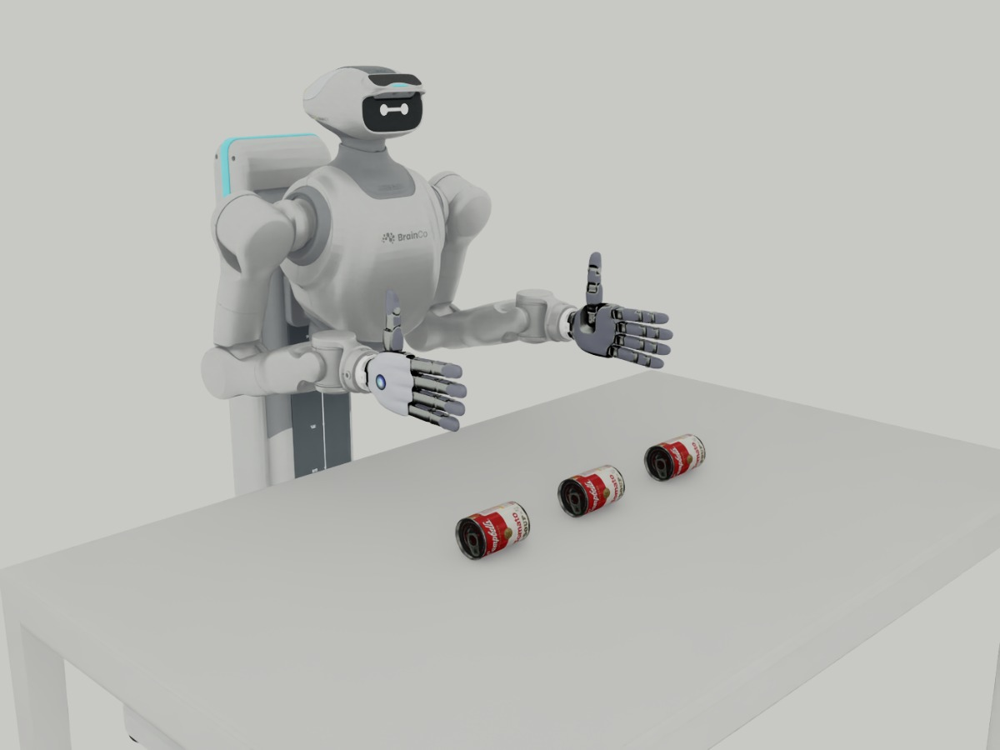
初态：三只同款汤罐横放且彼此分离。
区别：圆柱曲面的多点稳定堆叠，不是方块单面堆高。
怎么做
- 将两只罐并排横放作为底层。
- 把第三只横放在两罐形成的槽中。
- 依次撤手，检查稳定。
验收标准
- 上罐同时接触两只下罐，轴线夹角各小于 10°。
- 上罐离桌，三罐没有隐藏固定或穿透。
- 完全松手后结构保持 3 s。
开发前检查
- 使用实际网格核对抓取空间、支撑面与机器人可达性；转成动态资产后再测试。
资产、路径与单独预览
- 汤罐 × 3
assets/library/prepared/obj.tabletop100.soupcan/scene_v1/model.usdc原件：library/external/bench2dex/bf65215f844d/Objects/005_tomato_soup_can/textured.obj
路径相对代码 checkout；原件路径相对资产根目录。恢复方式见 开发说明。
76 / 安全交接 · 未开始 · 0 条轨迹
把餐刀调整成刀柄朝向接收手
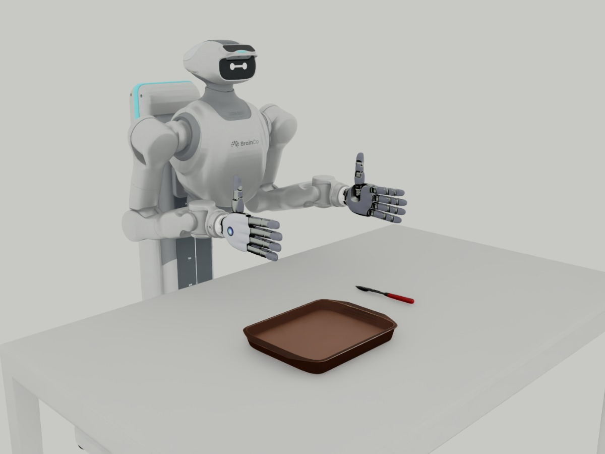
初态：餐刀平放在左侧，空托盘在右侧。
区别：交接有明确禁止接触区域及可握持端方向，区别于对称哑铃换手。
怎么做
- 抓住刀柄并调整朝向，把可握持的柄端送向另一手。
- 接收手确认握住刀柄后，交出手松开。
- 接收手把餐刀放入托盘。
验收标准
- 交接期间至少一只手持续握持刀柄。
- 任何手指都不能把刀刃作为主握持面。
- 刀进入托盘，刀尖朝向托盘内部并稳定 2 s。
开发前检查
- 使用实际网格核对抓取空间、支撑面与机器人可达性；转成动态资产后再测试。
资产、路径与单独预览
- 餐刀 × 1
assets/library/prepared/obj.tabletop100.knife/scene_v1/model.usdc原件：library/external/bench2dex/bf65215f844d/Objects/032_knife/textured.obj - 长方托盘 × 1
assets/library/prepared/obj.tabletop100.tray/scene_v1/model.usdc原件：library/external/bench2dex/bf65215f844d/Objects/130_tray/base3.glb
路径相对代码 checkout；原件路径相对资产根目录。恢复方式见 开发说明。
77 / 语义与空间 · 未开始 · 0 条轨迹
把食品与清洁用品分区摆开
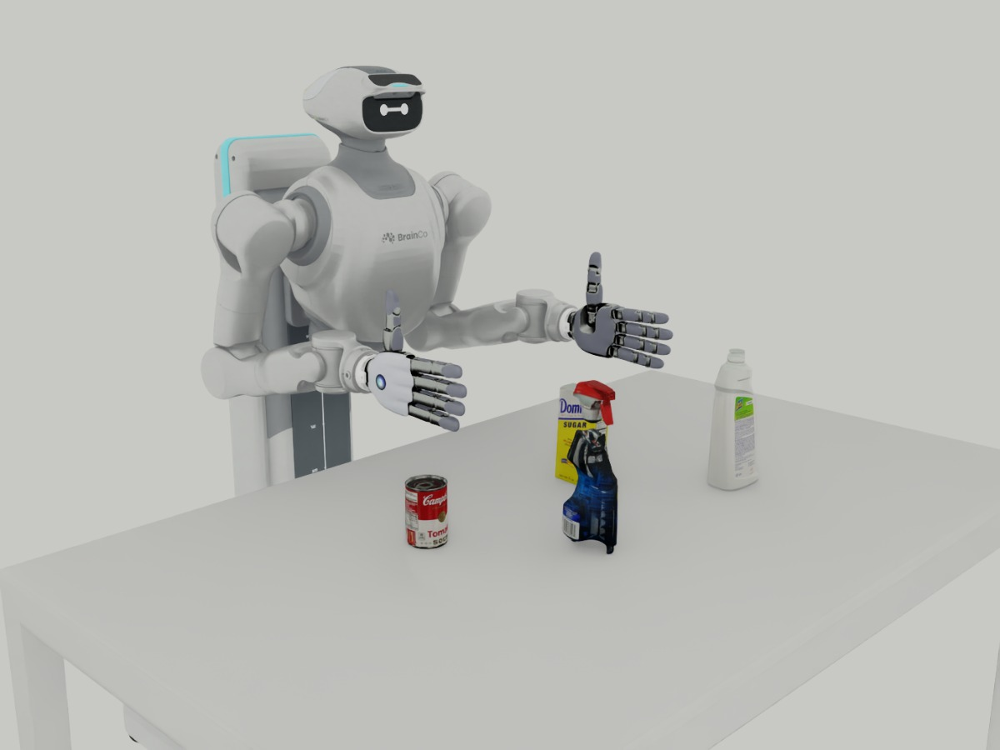
初态：两件食品和两件清洁用品交错摆放。
区别：按用途分区并满足隔离间距，区别于紧固件结构分类。
怎么做
- 把食品移到桌面左侧，清洁用品移到右侧。
- 调整两组内部间距，保证直立。
- 双手回位。
验收标准
- 食品中心 x 小于 -0.12 m，清洁用品中心 x 大于 0.12 m。
- 两组完整物体表面距离至少 10 cm。
- 所有物体直立且不互相支撑，稳定 2 s。
开发前检查
- 使用实际网格核对抓取空间、支撑面与机器人可达性；转成动态资产后再测试。
资产、路径与单独预览
- 清洁剂瓶 × 1
assets/library/prepared/obj.tabletop100.cleanser/scene_v1/model.usdc原件：library/external/bench2dex/bf65215f844d/Objects/021_bleach_cleanser/textured.obj - 糖盒 × 1
assets/library/prepared/obj.tabletop100.sugar/scene_v1/model.usdc原件：library/external/bench2dex/bf65215f844d/Objects/004_sugar_box/textured.obj - 喷雾瓶 × 1
assets/library/prepared/obj.tabletop100.spray/scene_v1/model.usdc原件：library/external/bench2dex/bf65215f844d/Objects/022_windex_bottle/textured.obj - 汤罐 × 1
assets/library/prepared/obj.tabletop100.soupcan/scene_v1/model.usdc原件：library/external/bench2dex/bf65215f844d/Objects/005_tomato_soup_can/textured.obj
路径相对代码 checkout；原件路径相对资产根目录。恢复方式见 开发说明。
78 / 语义与空间 · 未开始 · 0 条轨迹
按餐具关系摆一份早餐托盘
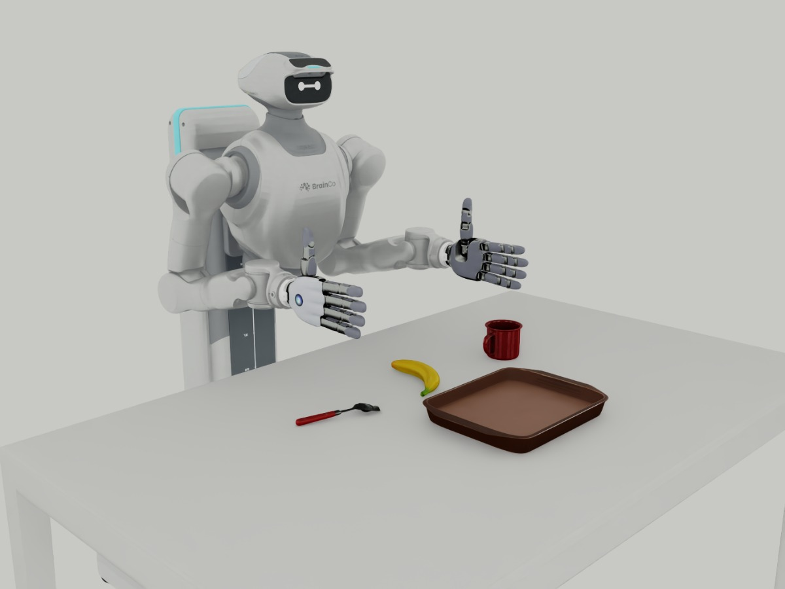
初态：托盘为空，杯、香蕉和勺子在托盘外。
区别：验收成组摆放的用途关系和后续可抓取性，区别于装满篮筐。
怎么做
- 将杯放在托盘后侧，杯把朝外便于拿取。
- 把香蕉放前侧，勺柄朝机器人。
- 检查物体间有取物间隙。
验收标准
- 三件完整落在托盘内，不互相接触。
- 杯把朝外误差小于 15°，勺柄朝前误差小于 15°。
- 杯和香蕉之间有至少 1 cm 间隙，释放后稳定 2 s。
开发前检查
- 使用实际网格核对抓取空间、支撑面与机器人可达性；转成动态资产后再测试。
资产、路径与单独预览
- 长方托盘 × 1
assets/library/prepared/obj.tabletop100.tray/scene_v1/model.usdc原件：library/external/bench2dex/bf65215f844d/Objects/130_tray/base3.glb - 带柄马克杯 × 1
assets/library/prepared/obj.tabletop100.mug/scene_v1/model.usdc原件：library/external/bench2dex/bf65215f844d/Objects/025_mug/textured.obj - 香蕉 × 1
assets/library/prepared/obj.tabletop100.banana/scene_v1/model.usdc原件：library/external/bench2dex/bf65215f844d/Objects/011_banana/textured.obj - 金属勺 × 1
assets/library/prepared/obj.tabletop50.spoon/scene_v1/model.usdc原件：library/external/bench2dex/bf65215f844d/Objects/031_spoon/textured.obj
路径相对代码 checkout；原件路径相对资产根目录。恢复方式见 开发说明。
79 / 精确放置 · 未开始 · 0 条轨迹
把碗居中放上电子秤
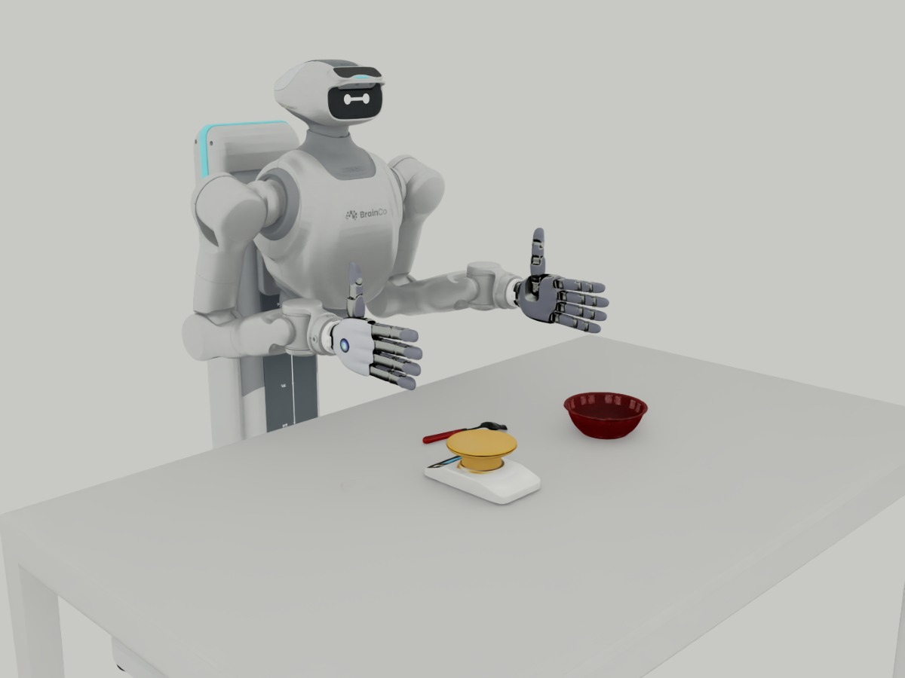
初态：碗、秤和勺子分开放置。
区别：小支撑平台上的精准落底和物体接触关系，区别于直接桌面摆杯。
怎么做
- 双手把碗放到秤面中央。
- 将勺子放到秤旁，勺柄朝前。
- 撤手等待稳定。
验收标准
- 碗底中心距秤面中心小于 8 mm，碗底在有效支撑区内。
- 勺子不搭在秤或碗上，最近间隙至少 1 cm。
- 碗只受秤面支撑并稳定 2 s，不要求去皮或读数。
开发前检查
- 使用实际网格核对抓取空间、支撑面与机器人可达性；转成动态资产后再测试。
资产、路径与单独预览
- 碗 × 1
assets/library/prepared/obj.tabletop50.bowl/scene_v1/model.usdc原件：library/external/bench2dex/bf65215f844d/Objects/024_bowl/textured.obj - 电子秤 × 1
assets/library/prepared/obj.tabletop100.scale/scene_v1/model.usdc原件：library/external/bench2dex/bf65215f844d/Objects/179_electronicscale/base6.glb - 金属勺 × 1
assets/library/prepared/obj.tabletop50.spoon/scene_v1/model.usdc原件：library/external/bench2dex/bf65215f844d/Objects/031_spoon/textured.obj
路径相对代码 checkout；原件路径相对资产根目录。恢复方式见 开发说明。
80 / 语义与空间 · 未开始 · 0 条轨迹
把三件长工具摆成可抓取扇形
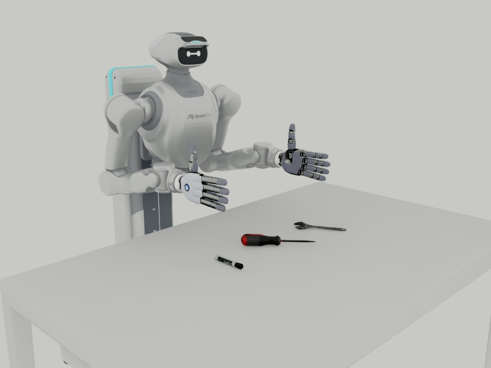
初态：扳手、螺丝刀、记号笔平行放置。
区别：异形工具按功能端和抓取间距组织，不是只把物体排成一行。
怎么做
- 逐件旋转并移动，使工作端朝后、握持端朝前。
- 工具轴线依次朝向 -30°、0°、30°目标方向。
- 保持各握持区相互分离。
验收标准
- 轴向相对各自目标误差小于 10°，工作端方向正确。
- 工具网格互不相交，握持区两两间距至少 3 cm。
- 三件均由桌面支撑且稳定 2 s。
开发前检查
- 为每件工具标定工作端、握持区与轴向，目标角度用同一桌面坐标系。
资产、路径与单独预览
- 活动扳手 × 1
assets/library/prepared/obj.tabletop100.wrench/scene_v1/model.usdc原件：library/external/bench2dex/bf65215f844d/Objects/042_adjustable_wrench/textured.obj - 一字螺丝刀 × 1
assets/library/prepared/obj.tabletop50.driver/scene_v1/model.usdc原件：library/external/bench2dex/bf65215f844d/Objects/044_flat_screwdriver/textured.obj - 粗记号笔 × 1
assets/library/prepared/obj.tabletop100.marker/scene_v1/model.usdc原件：library/external/bench2dex/bf65215f844d/Objects/040_large_marker/textured.obj
路径相对代码 checkout；原件路径相对资产根目录。恢复方式见 开发说明。
81 / 受限空间 · 未开始 · 0 条轨迹
让小车倒退进入托盘停车位
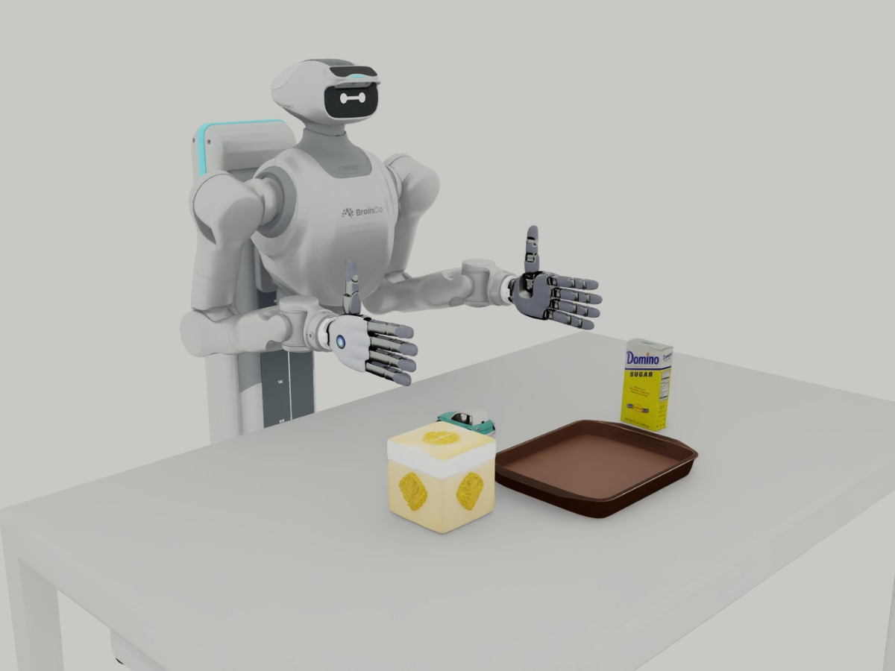
初态：托盘在后方，两盒限定入口两侧，小车在前方。
区别：有方向约束的容器入位，区别于平面绕障。
怎么做
- 抓控小车调整车尾朝向入口。
- 低位越过托盘边缘，倒向进入托盘。
- 把车轮落到盘底并释放。
验收标准
- 小车以车尾先进入，完整停在托盘内。
- 入位过程中不接触两侧包装盒。
- 车轮落底，最终航向误差小于 10°并稳定 2 s。
开发前检查
- 托盘有凸沿，不假装模型可以自行开过；允许手持低位跨沿再落轮。
资产、路径与单独预览
- 玩具车 × 1
assets/library/prepared/obj.tabletop50.toycar/scene_v1/model.usdc原件：library/external/bench2dex/bf65215f844d/Objects/165_toycar/base5.glb - 长方托盘 × 1
assets/library/prepared/obj.tabletop100.tray/scene_v1/model.usdc原件：library/external/bench2dex/bf65215f844d/Objects/130_tray/base3.glb - 糖盒 × 1
assets/library/prepared/obj.tabletop100.sugar/scene_v1/model.usdc原件：library/external/bench2dex/bf65215f844d/Objects/004_sugar_box/textured.obj - 茶叶盒 × 1
assets/library/prepared/obj.tabletop50.tea/scene_v1/model.usdc原件：library/external/bench2dex/bf65215f844d/Objects/214_tea-box/base5.glb
路径相对代码 checkout；原件路径相对资产根目录。恢复方式见 开发说明。
82 / 搭建与引导 · 未开始 · 0 条轨迹
铺好书本坡道再让小车上托盘
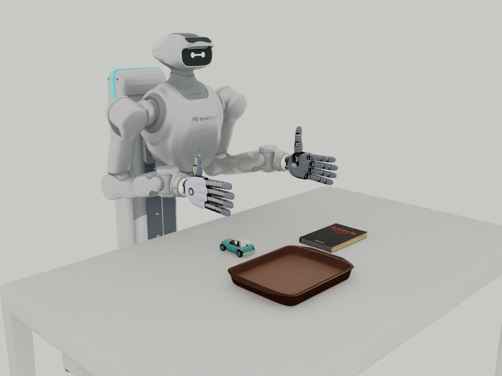
初态：书本平放在托盘旁，小车在前方。
区别：先搭建可行走通路，再进行轮式接触转移。
怎么做
- 把书的一端搭在托盘沿，另一端接地。
- 推控小车沿书面进入托盘。
- 车轮落底后移走坡道。
验收标准
- 车轮沿坡面连续经过，不允许抬车越过坡道。
- 书本没有滑脱，车身未穿过盘沿。
- 小车停在盘内，书本最终回到桌面。
开发前检查
- 使用实际网格核对抓取空间、支撑面与机器人可达性；转成动态资产后再测试。
资产、路径与单独预览
- 书 × 1
assets/library/prepared/obj.tabletop50.book/scene_v1/model.usdc原件：library/external/bench2dex/bf65215f844d/Objects/155_book/base1.glb - 长方托盘 × 1
assets/library/prepared/obj.tabletop100.tray/scene_v1/model.usdc原件：library/external/bench2dex/bf65215f844d/Objects/130_tray/base3.glb - 玩具车 × 1
assets/library/prepared/obj.tabletop50.toycar/scene_v1/model.usdc原件：library/external/bench2dex/bf65215f844d/Objects/165_toycar/base5.glb
路径相对代码 checkout；原件路径相对资产根目录。恢复方式见 开发说明。
83 / 姿态恢复 · 未开始 · 0 条轨迹
扶正侧倒的带柄量壶
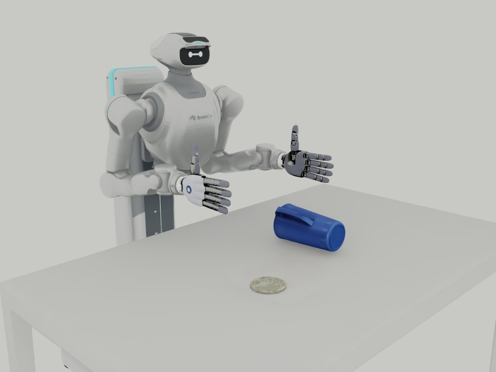
初态：量壶侧倒，杯垫在旁侧作为避让物。
区别：带柄偏心容器的双手恢复姿态，区别于扶正鞋或单手翻沙漏。
怎么做
- 一手抓壶把，另一手支撑壶身。
- 抬离桌面并把壶底转向下方。
- 把壶放正，松手。
验收标准
- 翻正过程中壶嘴不刮桌，壶把无穿透。
- 壶轴相对竖直误差小于 5°，杯垫位移小于 1 cm。
- 放下后稳定 2 s，双手回位。
开发前检查
- 使用实际网格核对抓取空间、支撑面与机器人可达性；转成动态资产后再测试。
资产、路径与单独预览
- 带柄量壶 × 1
assets/library/prepared/obj.tabletop100.pitcher/scene_v1/model.usdc原件：library/external/bench2dex/bf65215f844d/Objects/019_pitcher_base/textured.obj - 杯垫 × 1
assets/library/prepared/obj.tabletop50.coaster/scene_v1/model.usdc原件：library/external/bench2dex/bf65215f844d/Objects/137_coaster/base0.glb
路径相对代码 checkout；原件路径相对资产根目录。恢复方式见 开发说明。
84 / 端点对准 · 未开始 · 0 条轨迹
让浇水壶嘴依次对准两个杯口
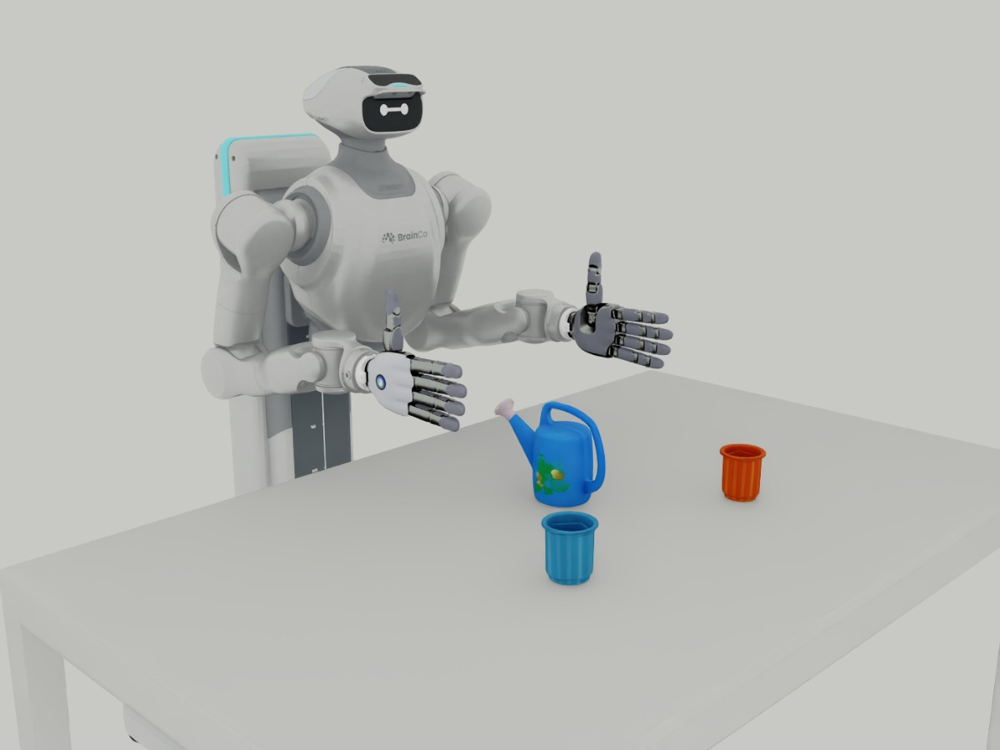
初态：浇水壶在前方，两只杯在后方分开摆放。
区别：长偏置端点在多个目标间连续对准，不是液体倾倒。
怎么做
- 抓住壶把并托住壶身。
- 依次将壶嘴移到两个杯口上方，做小幅倾斜。
- 回正放下。
验收标准
- 壶嘴投影依次进入两杯口中心 1 cm 范围。
- 嘴端距杯口高度 2–5 cm，壶体不碰杯。
- 顺序正确，每处保持 0.5 s；不宣称实际出水。
开发前检查
- 源资产无液体；标定壶嘴坐标，只验收姿态与相对位置。
资产、路径与单独预览
- 浇水壶 × 1
assets/library/prepared/obj.tabletop100.wateringcan/scene_v1/model.usdc原件：library/external/bench2dex/bf65215f844d/Objects/193_waterer/base7.glb - 套杯 A × 1
assets/library/prepared/obj.tabletop50.cup_a/scene_v1/model.usdc原件：library/external/bench2dex/bf65215f844d/Objects/065-a_cups/google_16k/textured.obj - 套杯 B × 1
assets/library/prepared/obj.tabletop50.cup_b/scene_v1/model.usdc原件：library/external/bench2dex/bf65215f844d/Objects/065-b_cups/google_16k/textured.obj
路径相对代码 checkout；原件路径相对资产根目录。恢复方式见 开发说明。
85 / 视觉朝向 · 未开始 · 0 条轨迹
转动罐头让标签依次朝向两个观察方向
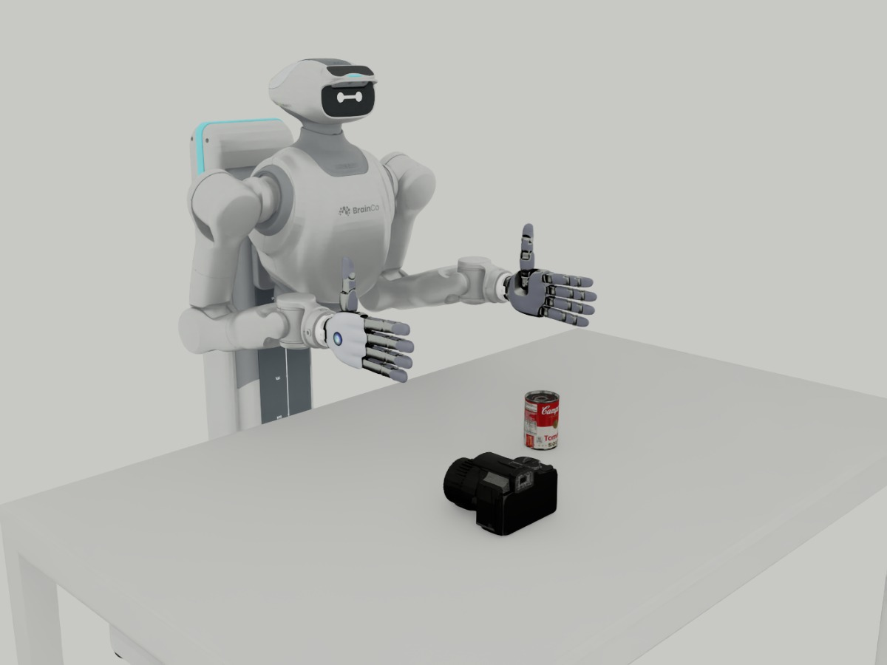
初态：带纹理汤罐在中央，相机作为第二观察方位参照。
区别：连续多视点展示带语义正面的物体，不是骰子面朝上。
怎么做
- 抓起罐头，让正面标签朝向机器人。
- 继续转动，使标签朝向相机参考点。
- 保持最后朝向放回桌面。
验收标准
- 两阶段标签法向与各自视线夹角均小于 15°，保持各 0.5 s。
- 标签面不能被手完全遮挡。
- 罐头直立放稳 2 s，不能只移动相机代替转罐。
开发前检查
- 在纹理网格上标定标签正面法向；相机道具本身不假定有传感器。
资产、路径与单独预览
- 汤罐 × 1
assets/library/prepared/obj.tabletop100.soupcan/scene_v1/model.usdc原件：library/external/bench2dex/bf65215f844d/Objects/005_tomato_soup_can/textured.obj - 相机 × 1
assets/library/prepared/obj.tabletop50.camera/scene_v1/model.usdc原件：library/external/bench2dex/bf65215f844d/Objects/083_camera/02_camera/01/mobility.urdf
路径相对代码 checkout；原件路径相对资产根目录。恢复方式见 开发说明。
86 / 语义与空间 · 未开始 · 0 条轨迹
按最长尺寸排列三种水果
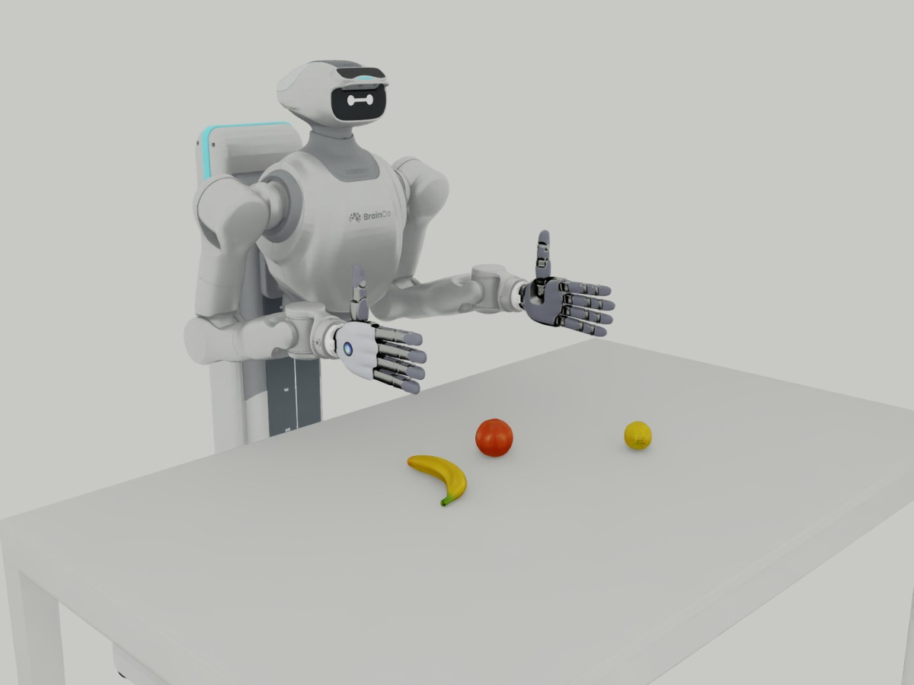
初态：香蕉、柠檬和橙子在桌面分散放置。
区别：连续尺寸排序加长轴约束，区别于按紧固件类别分箱。
怎么做
- 比较固定资产网格的实际最长尺寸。
- 从左到右按长到短排列，并让长轴方向一致。
- 保留取物间隙。
验收标准
- 排序依据固定缩放后的网格尺寸，不凭类别猜测。
- 三个物体中心到同一 y 线距离小于 1 cm。
- 相邻完整网格间距 2–4 cm，稳定 2 s。
开发前检查
- 使用实际网格核对抓取空间、支撑面与机器人可达性；转成动态资产后再测试。
资产、路径与单独预览
- 香蕉 × 1
assets/library/prepared/obj.tabletop100.banana/scene_v1/model.usdc原件：library/external/bench2dex/bf65215f844d/Objects/011_banana/textured.obj - 柠檬 × 1
assets/library/prepared/obj.tabletop100.lemon/scene_v1/model.usdc原件：library/external/bench2dex/bf65215f844d/Objects/014_lemon/textured.obj - 橙子 × 1
assets/library/prepared/obj.tabletop100.orange/scene_v1/model.usdc原件：library/external/bench2dex/bf65215f844d/Objects/017_orange/textured.obj
路径相对代码 checkout；原件路径相对资产根目录。恢复方式见 开发说明。
87 / 形状配合 · 未开始 · 0 条轨迹
把草莓放在香蕉弯曲内侧
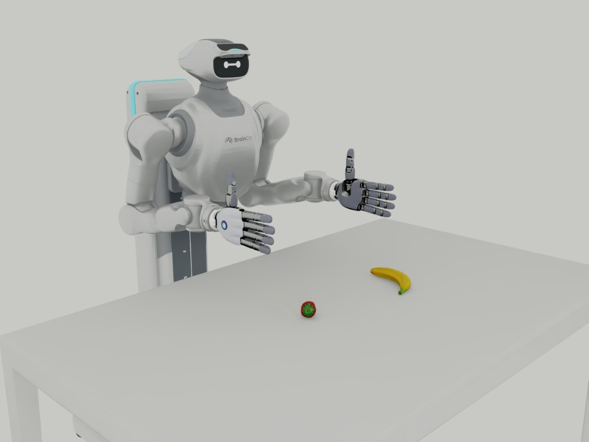
初态：香蕉与草莓分开放在桌面。
区别：利用不规则曲率建立空间关系，而不是把水果直接装盘。
怎么做
- 调整香蕉朝向，让弯曲内侧朝机器人。
- 拿起草莓，放到香蕉弯曲内侧。
- 轻放草莓并撤手。
验收标准
- 草莓中心落在香蕉两端连线与内弧围成的凹侧区域。
- 香蕉与草莓至少留 3 mm 间隙，二者不互相支撑。
- 香蕉落桌并稳定 2 s。
开发前检查
- 先从网格核对草莓与香蕉内弧关系；目标为空间配合，不要求紧嵌或形变。
资产、路径与单独预览
- 香蕉 × 1
assets/library/prepared/obj.tabletop100.banana/scene_v1/model.usdc原件：library/external/bench2dex/bf65215f844d/Objects/011_banana/textured.obj - 草莓 × 1
assets/library/prepared/obj.tabletop50.strawberry/scene_v1/model.usdc原件：library/external/bench2dex/bf65215f844d/Objects/012_strawberry/textured.obj
路径相对代码 checkout；原件路径相对资产根目录。恢复方式见 开发说明。
88 / 抓取策略 · 未开始 · 0 条轨迹
利用桌边露出的盘沿抓起餐盘
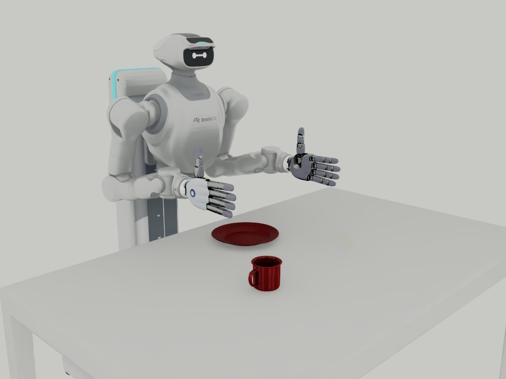
初态：餐盘靠近桌前沿，但完整网格仍在桌面范围内；杯子在后侧。
区别：主动创造桌边抓取空间，与使用工具铲入或直接抓盘不同。
怎么做
- 先沿桌面把盘沿送出桌边 2–3 cm。
- 用露出的下缘完成上下对捏。
- 抬盘，移动回桌面内部并放下。
验收标准
- 对捏前盘沿确实越过桌边，盘重心仍在支撑域内。
- 抓取时下指从桌边外侧进入，不能穿过桌面。
- 餐盘最终完整落回桌面，杯子无碰撞。
开发前检查
- 运行时先核对真实桌沿坐标；静态初态不把物体悬空预摆成功。
资产、路径与单独预览
- 餐盘 × 1
assets/library/prepared/obj.tabletop50.plate/scene_v1/model.usdc原件：library/external/bench2dex/bf65215f844d/Objects/029_plate/textured.obj - 带柄马克杯 × 1
assets/library/prepared/obj.tabletop100.mug/scene_v1/model.usdc原件：library/external/bench2dex/bf65215f844d/Objects/025_mug/textured.obj
路径相对代码 checkout；原件路径相对资产根目录。恢复方式见 开发说明。
89 / 端点对准 · 未开始 · 0 条轨迹
喷雾瓶喷嘴沿海绵三个位置对准
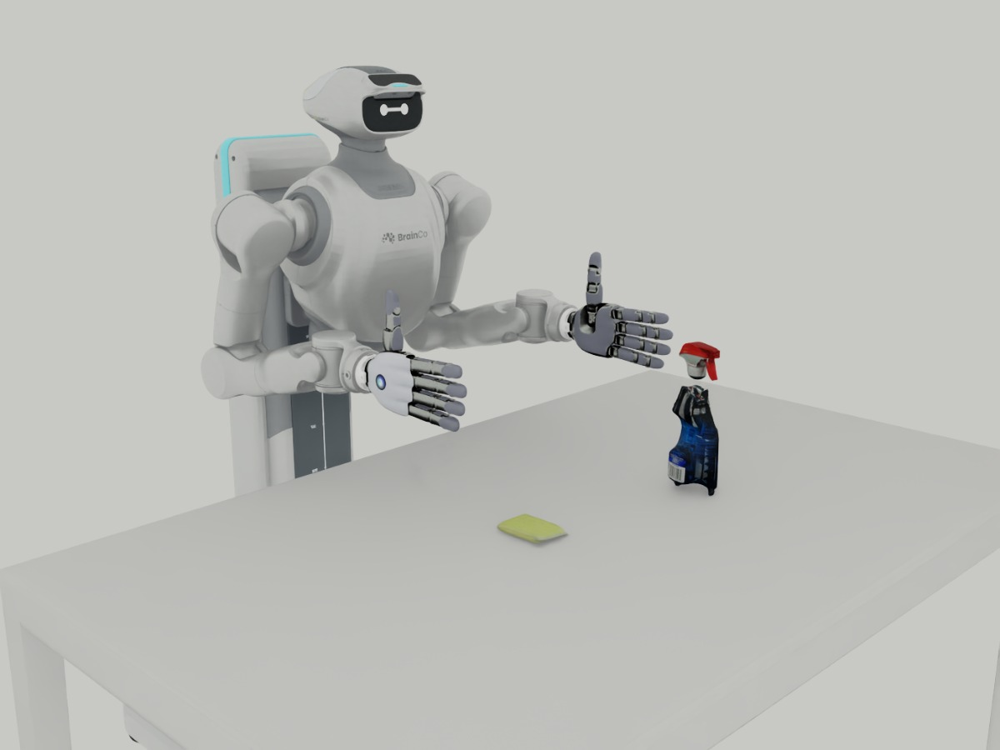
初态：喷雾瓶直立，海绵平放。
区别：有射线方向及距离约束的工具姿态控制，不是擦拭或持麦巡检。
怎么做
- 拿起喷雾瓶并把喷嘴朝向海绵。
- 依次对准海绵近端、中央和远端。
- 放回喷雾瓶。
验收标准
- 喷嘴轴线依次与三个表面目标相交，横向误差小于 8 mm。
- 喷嘴距表面 8–12 cm，不能撞击海绵。
- 瓶子放正；不要求扳机动作或喷出液体。
开发前检查
- 使用实际网格核对抓取空间、支撑面与机器人可达性；转成动态资产后再测试。
资产、路径与单独预览
- 喷雾瓶 × 1
assets/library/prepared/obj.tabletop100.spray/scene_v1/model.usdc原件：library/external/bench2dex/bf65215f844d/Objects/022_windex_bottle/textured.obj - 海绵 × 1
assets/library/prepared/obj.tabletop50.sponge/scene_v1/model.usdc原件：library/external/bench2dex/bf65215f844d/Objects/026_sponge/textured.obj
路径相对代码 checkout；原件路径相对资产根目录。恢复方式见 开发说明。
90 / 平衡放置 · 未开始 · 0 条轨迹
把牙膏管倒立在盖端
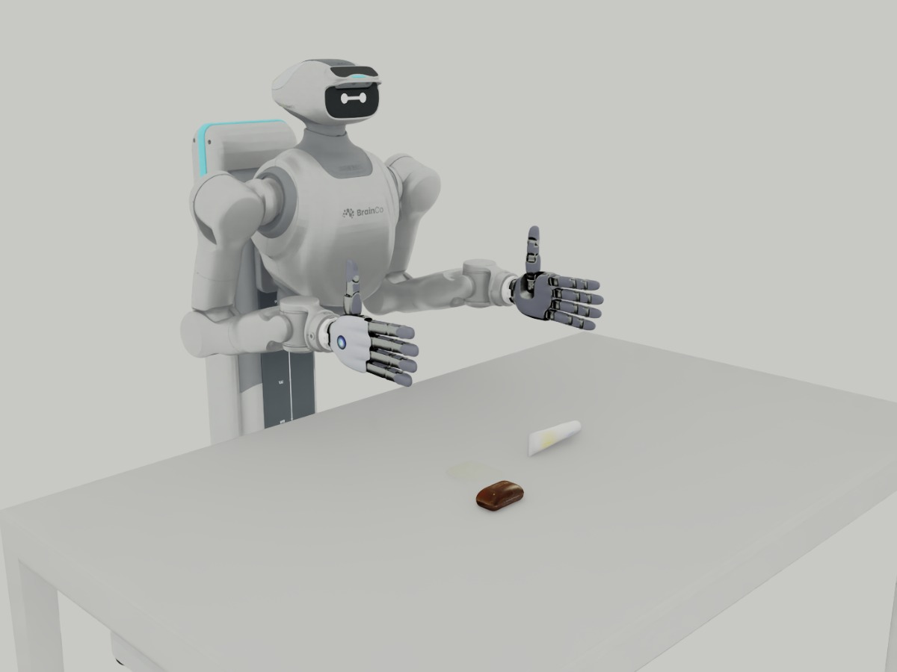
初态：牙膏管横放，香皂在后侧作为避让物。
区别：不对称软包装外形的窄底自立；本阶段使用源刚体外形。
怎么做
- 夹住管身并识别盖端。
- 翻转到盖端向下，缓慢放到桌面。
- 撤手，检查自立。
验收标准
- 由盖端实际支撑，管身不接触其他物体。
- 主轴相对竖直误差小于 8°，稳定 3 s。
- 无挤压变形或牙膏挤出声明。
开发前检查
- 先检查该源盖端是否有足够平面支撑；不能用隐藏固定使其站立。
资产、路径与单独预览
- 牙膏管 × 1
assets/library/prepared/obj.tabletop100.toothpaste/scene_v1/model.usdc原件：library/external/bench2dex/bf65215f844d/Objects/218_tooth-paste/base0.glb - 香皂 × 1
assets/library/prepared/obj.tabletop50.soap/scene_v1/model.usdc原件：library/external/bench2dex/bf65215f844d/Objects/209_soap/base3.glb
路径相对代码 checkout；原件路径相对资产根目录。恢复方式见 开发说明。
91 / 双手协作 · 未开始 · 0 条轨迹
托住锅柄与锅底搬运带载煎锅
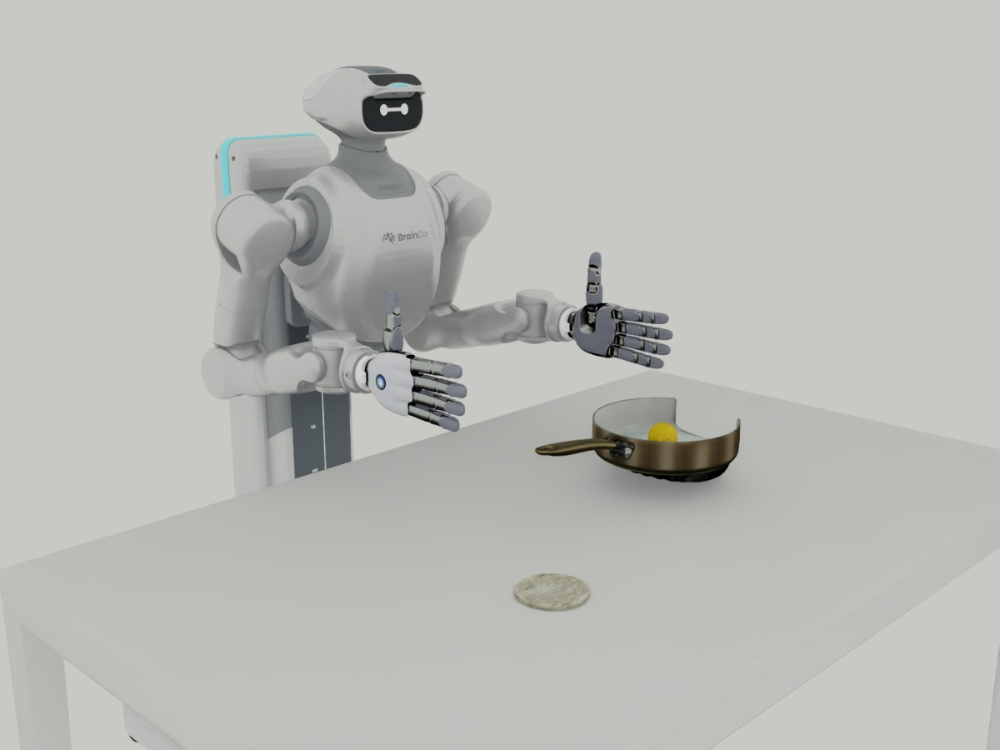
初态：柠檬在煎锅内，杯垫在目标区域旁。
区别：长柄负载力矩下的非对称双手分工，不是放空锅到炉上。
怎么做
- 一手握长柄，另一手从锅底侧托住。
- 把带载锅移到目标区域，保持锅面水平。
- 先落锅底再释放。
验收标准
- 锅平移至少 20 cm，柠檬始终留在锅内。
- 运输阶段同时存在柄部抓握和锅底支撑。
- 锅最终落稳，柠檬相对位移不超过锅内半径一半。
开发前检查
- 源扫描的锅壁有局部缺口；当前只考察锅底托物，不能宣称密闭盛放。动态版本需核对缺口与碰撞边界，保持载荷远离缺口。
资产、路径与单独预览
- 带柄煎锅 × 1
assets/library/prepared/obj.tabletop100.skillet/scene_v1/model.usdc原件：library/external/bench2dex/bf65215f844d/Objects/027-a_skillet/google_16k/textured.obj - 柠檬 × 1
assets/library/prepared/obj.tabletop100.lemon/scene_v1/model.usdc原件：library/external/bench2dex/bf65215f844d/Objects/014_lemon/textured.obj - 杯垫 × 1
assets/library/prepared/obj.tabletop50.coaster/scene_v1/model.usdc原件：library/external/bench2dex/bf65215f844d/Objects/137_coaster/base0.glb
路径相对代码 checkout；原件路径相对资产根目录。恢复方式见 开发说明。
92 / 工具避障 · 未开始 · 0 条轨迹
用勺子从书本桥下取出球
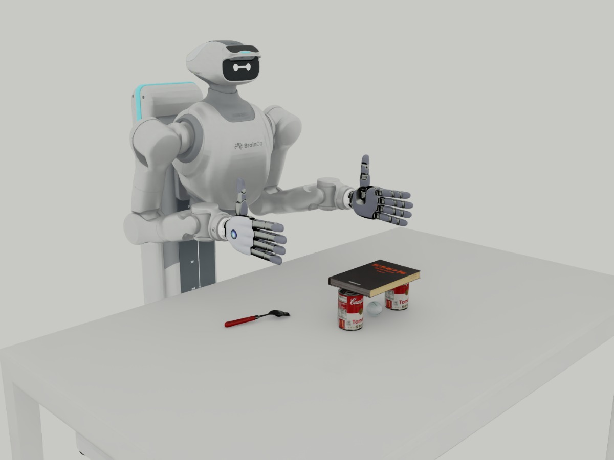
初态：书本横搭两罐形成桥，球在桥下，勺子在右前方。
区别：工具在受限高度内接近目标，不是开阔空间舀球。
怎么做
- 从桥下前方伸入勺面。
- 沿桌面把球带出桥下。
- 球到空旷区后用勺托起再放下。
验收标准
- 球从桥下移出至少 12 cm，主要接触来自勺子。
- 书和罐头位移均小于 1 cm，不能先拆桥。
- 球有一次离桌至少 2 cm 的勺托阶段。
开发前检查
- 使用实际网格核对抓取空间、支撑面与机器人可达性；转成动态资产后再测试。
资产、路径与单独预览
- 汤罐 × 2
assets/library/prepared/obj.tabletop100.soupcan/scene_v1/model.usdc原件：library/external/bench2dex/bf65215f844d/Objects/005_tomato_soup_can/textured.obj - 书 × 1
assets/library/prepared/obj.tabletop50.book/scene_v1/model.usdc原件：library/external/bench2dex/bf65215f844d/Objects/155_book/base1.glb - 高尔夫球 × 1
assets/library/prepared/obj.tabletop50.golf/scene_v1/model.usdc原件：library/external/bench2dex/bf65215f844d/Objects/058_golf_ball/textured.obj - 金属勺 × 1
assets/library/prepared/obj.tabletop50.spoon/scene_v1/model.usdc原件：library/external/bench2dex/bf65215f844d/Objects/031_spoon/textured.obj
路径相对代码 checkout；原件路径相对资产根目录。恢复方式见 开发说明。
93 / 顺序接触 · 未开始 · 0 条轨迹
排好包装盒后触发顺序倒下
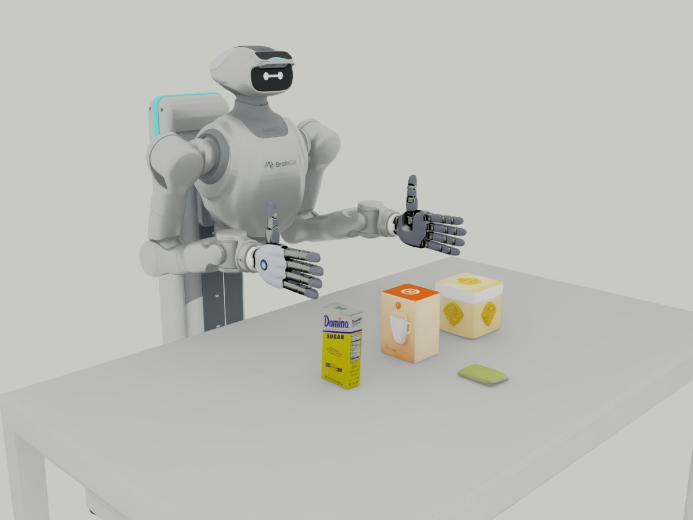
初态：三只直立包装盒分开放，海绵在旁。
区别：先布置接触链再单次触发，区别于用球直接撞一个瓶。
怎么做
- 将包装盒排成能依次触碰的队列。
- 只推动第一只，使其触发后续两只倒下。
- 等待全部静止。
验收标准
- 后两只开始倾倒的时刻严格晚于前一只，且由物体接触触发。
- 手只触碰第一只；不能直接推倒其他盒。
- 三只都最终侧躺在桌面，无掉桌。
开发前检查
- 根据各包装盒高度、重心及间距计算可触及关系，动态摩擦需单独测试。
资产、路径与单独预览
- 茶叶盒 × 1
assets/library/prepared/obj.tabletop50.tea/scene_v1/model.usdc原件：library/external/bench2dex/bf65215f844d/Objects/214_tea-box/base5.glb - 咖啡盒 × 1
assets/library/prepared/obj.tabletop50.coffee/scene_v1/model.usdc原件：library/external/bench2dex/bf65215f844d/Objects/215_coffee-box/base6.glb - 糖盒 × 1
assets/library/prepared/obj.tabletop100.sugar/scene_v1/model.usdc原件：library/external/bench2dex/bf65215f844d/Objects/004_sugar_box/textured.obj - 海绵 × 1
assets/library/prepared/obj.tabletop50.sponge/scene_v1/model.usdc原件：library/external/bench2dex/bf65215f844d/Objects/026_sponge/textured.obj
路径相对代码 checkout；原件路径相对资产根目录。恢复方式见 开发说明。
94 / 搭建与支撑 · 未开始 · 0 条轨迹
用两只罐头支住竖放的书
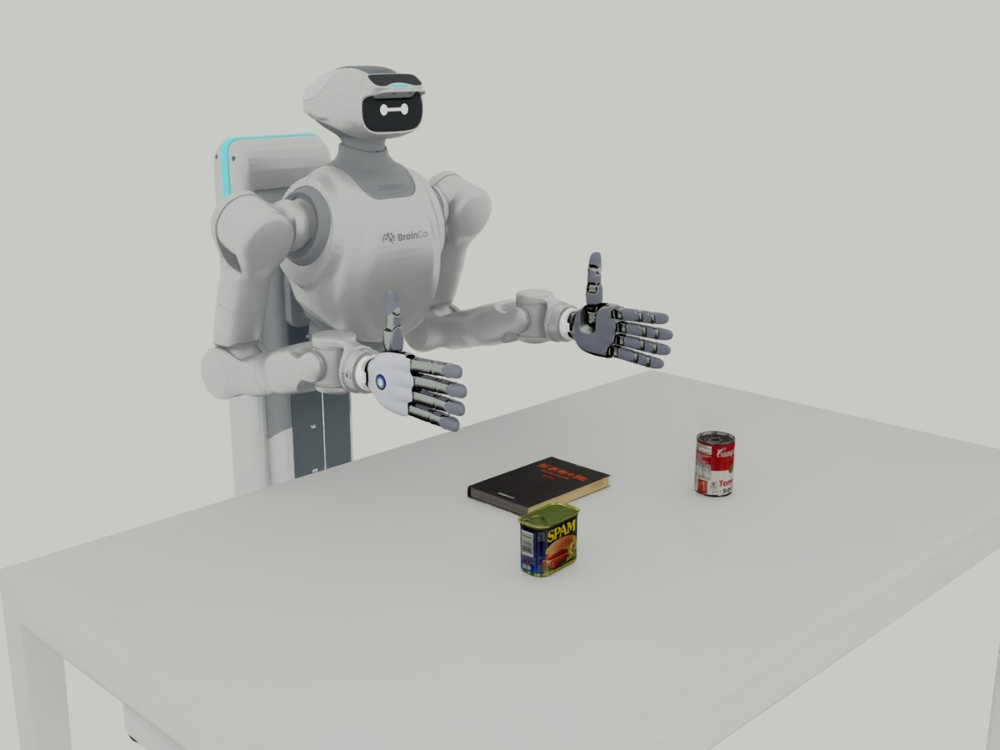
初态：书本平放，两罐分开放置。
区别：边立薄物体并建立外部支撑，区别于平放书或堆叠物体。
怎么做
- 把书立在窄边上并用一手扶住。
- 另一手把两罐分别放到书的两侧抵住。
- 缓慢松开扶书的手。
验收标准
- 书本主平面与桌面夹角 85°–95°。
- 两罐分别在书两侧提供真实支撑，不能使用固定关节。
- 所有手撤离后书保持 3 s。
开发前检查
- 根据网格确定书脊窄边与两侧罐头接触高度。
资产、路径与单独预览
- 书 × 1
assets/library/prepared/obj.tabletop50.book/scene_v1/model.usdc原件：library/external/bench2dex/bf65215f844d/Objects/155_book/base1.glb - 汤罐 × 1
assets/library/prepared/obj.tabletop100.soupcan/scene_v1/model.usdc原件：library/external/bench2dex/bf65215f844d/Objects/005_tomato_soup_can/textured.obj - 午餐肉罐 × 1
assets/library/prepared/obj.tabletop100.meatcan/scene_v1/model.usdc原件：library/external/bench2dex/bf65215f844d/Objects/010_potted_meat_can/textured.obj
路径相对代码 checkout；原件路径相对资产根目录。恢复方式见 开发说明。
95 / 非抓取操作 · 未开始 · 0 条轨迹
让横放罐头沿两本书之间滚动
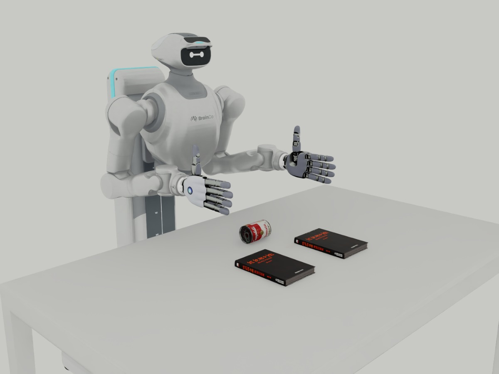
初态：两本书分开平放形成长通道，汤罐横放在入口。
区别：受通道约束的圆柱滚动和阻停，区别于球的双手接传。
怎么做
- 把罐轴调整到与通道前进方向垂直。
- 手掌轻推使罐头沿通道滚动。
- 在出口阻停，避免继续滚出桌面。
验收标准
- 罐头前进至少 15 cm，并绕自身轴转动至少 90°。
- 罐体未越过书本上方，不能提起代替滚动。
- 书本位移小于 1 cm，罐头最终静止 2 s。
开发前检查
- 使用实际网格核对抓取空间、支撑面与机器人可达性；转成动态资产后再测试。
资产、路径与单独预览
- 书 × 2
assets/library/prepared/obj.tabletop50.book/scene_v1/model.usdc原件：library/external/bench2dex/bf65215f844d/Objects/155_book/base1.glb - 汤罐 × 1
assets/library/prepared/obj.tabletop100.soupcan/scene_v1/model.usdc原件：library/external/bench2dex/bf65215f844d/Objects/005_tomato_soup_can/textured.obj
路径相对代码 checkout；原件路径相对资产根目录。恢复方式见 开发说明。
96 / 插装与对准 · 未开始 · 0 条轨迹
让毛笔同时穿过两个杯把
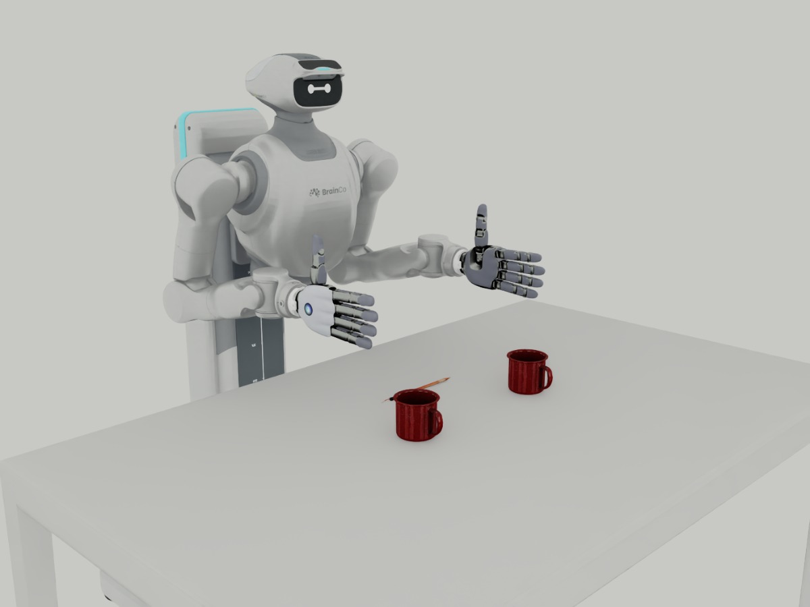
初态：两只杯子分开直立，杯把方向一致，毛笔在前方。
区别：先装配目标孔轴，再完成多孔约束插入；区别于单孔插杆。
怎么做
- 调整两杯的位置，使杯把孔轴近似共线。
- 一手稳定杯子，另一手把笔依次穿过两个孔。
- 保持笔贯穿两孔后松手。
验收标准
- 同一支笔连续穿过两个真实孔道。
- 两杯均直立，笔最终仅由杯把支撑并保持 2 s。
- 不能将杯体互相穿插来缩短孔距。
开发前检查
- 先用真实笔长与杯把位置验证可形成同轴双孔；必要时转动杯把相向摆放，不能改变资产尺寸。
资产、路径与单独预览
- 带柄马克杯 × 2
assets/library/prepared/obj.tabletop100.mug/scene_v1/model.usdc原件：library/external/bench2dex/bf65215f844d/Objects/025_mug/textured.obj - 毛笔 × 1
assets/library/prepared/obj.tabletop50.brushpen/scene_v1/model.usdc原件：library/external/bench2dex/bf65215f844d/Objects/197_brush-pen/base5.glb
路径相对代码 checkout；原件路径相对资产根目录。恢复方式见 开发说明。
97 / 受限空间 · 未开始 · 0 条轨迹
把托盘侧转后送过两只高瓶
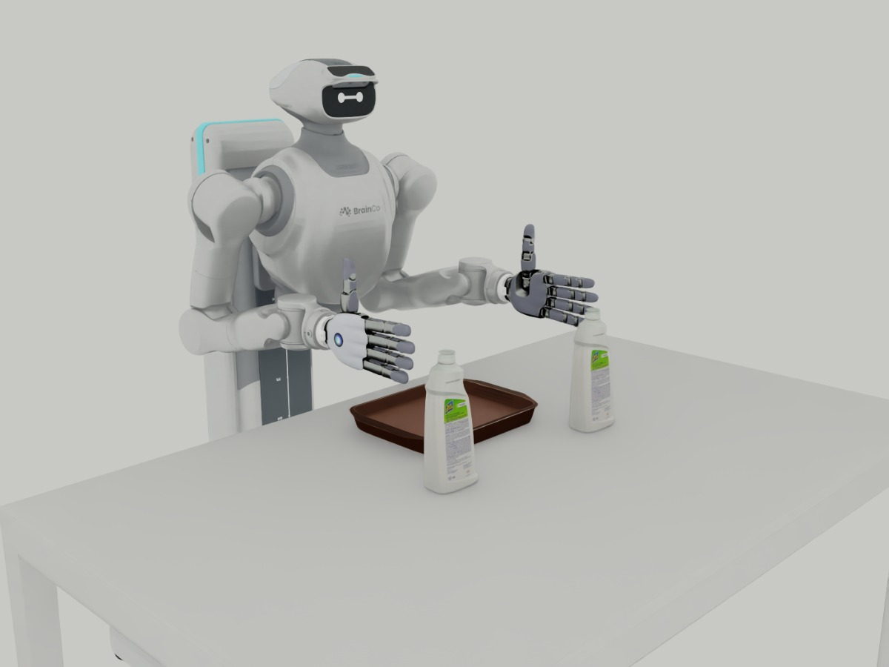
初态：两只高瓶形成通道，托盘长边横向摆在通道前。
区别：大面积扁平物体需要改变平面朝向才能通过，比长杆穿缝增加双手同步约束。
怎么做
- 双手端起托盘，在水平面内旋转 90°。
- 让窄边朝向通道，低位送过两瓶。
- 在通道后方平放。
验收标准
- 托盘完整从两瓶之间经过，底面高度小于瓶高的一半。
- 托盘与瓶子最小间隙至少 5 mm，瓶位移小于 1 cm。
- 最终托盘长轴朝前后，释放后稳定 2 s。
开发前检查
- 以固定模型实际尺寸核对：托盘窄边约 27.4 cm，通道约 31.8 cm，长边 36 cm 不能直接横向通过。
资产、路径与单独预览
- 清洁剂瓶 × 2
assets/library/prepared/obj.tabletop100.cleanser/scene_v1/model.usdc原件：library/external/bench2dex/bf65215f844d/Objects/021_bleach_cleanser/textured.obj - 长方托盘 × 1
assets/library/prepared/obj.tabletop100.tray/scene_v1/model.usdc原件：library/external/bench2dex/bf65215f844d/Objects/130_tray/base3.glb
路径相对代码 checkout；原件路径相对资产根目录。恢复方式见 开发说明。
98 / 工具避障 · 未开始 · 0 条轨迹
用叉柄推海绵绕开瓶子
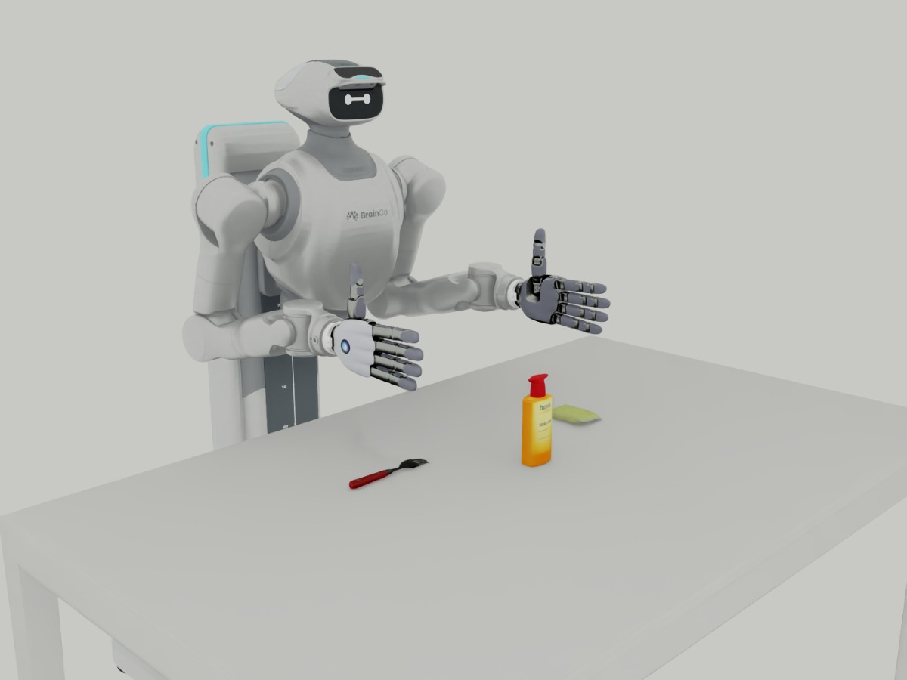
初态：海绵在左前方，乳液瓶在中央，叉子在右侧。
区别：通过切换工具接触面规划非抓取绕障，不是抓控小车移动。
怎么做
- 握叉并用钝柄端接触海绵侧面。
- 分段改变接触边，把海绵推到瓶子另一侧。
- 撤回工具。
验收标准
- 海绵从 x<-0.15 m 移到 x>0.15 m，路线绕过瓶身。
- 手不直接抓海绵，工具不能扎入海绵。
- 瓶子位移小于 1 cm，始终直立。
开发前检查
- 使用实际网格核对抓取空间、支撑面与机器人可达性；转成动态资产后再测试。
资产、路径与单独预览
- 海绵 × 1
assets/library/prepared/obj.tabletop50.sponge/scene_v1/model.usdc原件：library/external/bench2dex/bf65215f844d/Objects/026_sponge/textured.obj - 护肤油瓶 × 1
assets/library/prepared/obj.tabletop50.lotion/scene_v1/model.usdc原件：library/external/bench2dex/bf65215f844d/Objects/211_hydrating-oil/base5.glb - 餐叉 × 1
assets/library/prepared/obj.tabletop50.fork/scene_v1/model.usdc原件：library/external/bench2dex/bf65215f844d/Objects/030_fork/textured.obj
路径相对代码 checkout；原件路径相对资产根目录。恢复方式见 开发说明。
99 / 姿态轨迹 · 未开始 · 0 条轨迹
握住手摇铃完成三次往复摆动
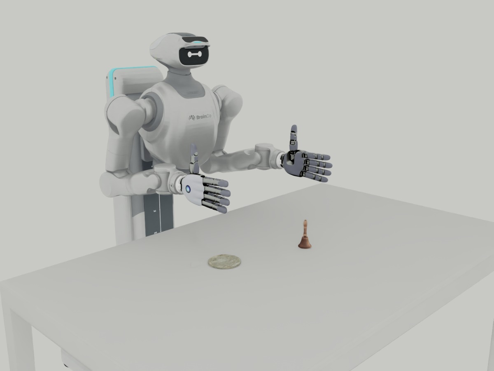
初态：手摇铃直立，杯垫在右侧作为回放位置。
区别：有周期、振幅和停止姿态要求的连续摆动，不是抓起后直接移位。
怎么做
- 握住铃柄并抬离桌面。
- 让铃体连续完成三次左右往复摆动。
- 停止摆动后把铃底放到杯垫中央。
验收标准
- 铃体绕指定横轴完成三次往复，每侧幅度 20°–35°。
- 握持只在铃柄，铃体无撞桌或脱手，转向时角速度连续。
- 铃底落在杯垫内且稳定 2 s，不要求声音或内部铃舌运动。
开发前检查
- 源模型为手摇铃外形，按整体刚体评估，未接入声学及内部铃舌。
资产、路径与单独预览
- 手摇铃 × 1
assets/library/prepared/obj.tabletop100.callbell/scene_v1/model.usdc原件：library/external/bench2dex/bf65215f844d/Objects/213_callbell/base5.glb - 杯垫 × 1
assets/library/prepared/obj.tabletop50.coaster/scene_v1/model.usdc原件：library/external/bench2dex/bf65215f844d/Objects/137_coaster/base0.glb
路径相对代码 checkout；原件路径相对资产根目录。恢复方式见 开发说明。
100 / 双手协作 · 未开始 · 0 条轨迹
扶稳托盘同时交换两侧载荷
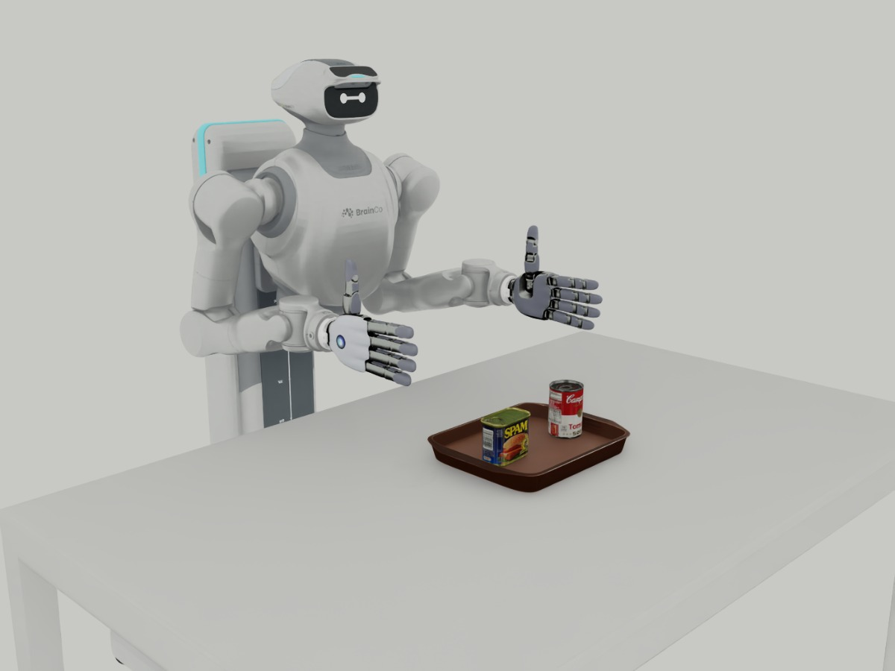
初态：两种罐头分放托盘两端，托盘平放桌面。
区别：移动支撑面与载荷重新分布同时发生，区别于桌面双手交换盒子。
怎么做
- 一手端起托盘一侧并保持可控姿态。
- 另一手依次把两罐交换到对侧，中间允许临时落桌。
- 托盘放平，确认载荷已交换。
验收标准
- 至少一只手在交换期间持续稳住离桌的托盘，盘面倾角小于 10°。
- 两罐最终分别到达对侧初始区域，误差小于 2 cm。
- 非操作中的载荷相对滑移不超过 2 cm，无掉落。
开发前检查
- 使用实际网格核对抓取空间、支撑面与机器人可达性；转成动态资产后再测试。
资产、路径与单独预览
- 长方托盘 × 1
assets/library/prepared/obj.tabletop100.tray/scene_v1/model.usdc原件：library/external/bench2dex/bf65215f844d/Objects/130_tray/base3.glb - 汤罐 × 1
assets/library/prepared/obj.tabletop100.soupcan/scene_v1/model.usdc原件：library/external/bench2dex/bf65215f844d/Objects/005_tomato_soup_can/textured.obj - 午餐肉罐 × 1
assets/library/prepared/obj.tabletop100.meatcan/scene_v1/model.usdc原件：library/external/bench2dex/bf65215f844d/Objects/010_potted_meat_can/textured.obj
路径相对代码 checkout；原件路径相对资产根目录。恢复方式见 开发说明。